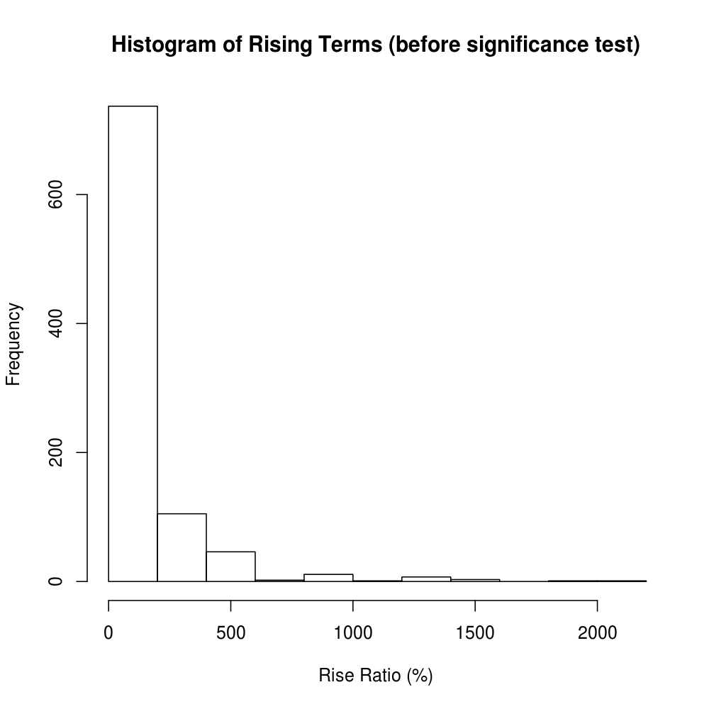
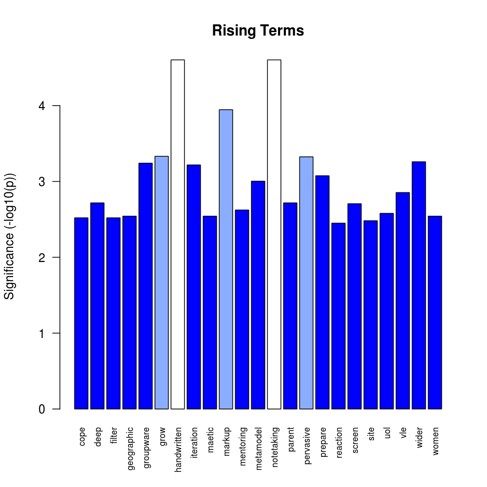
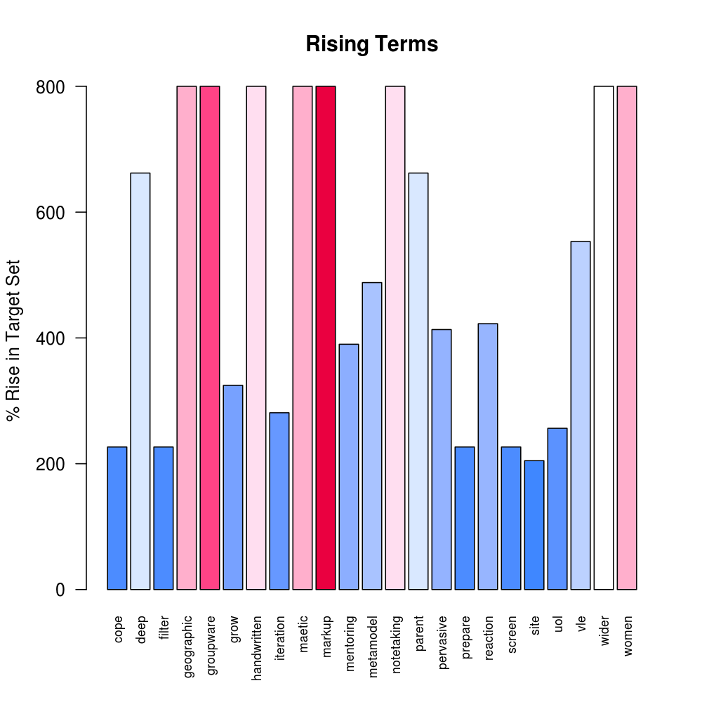
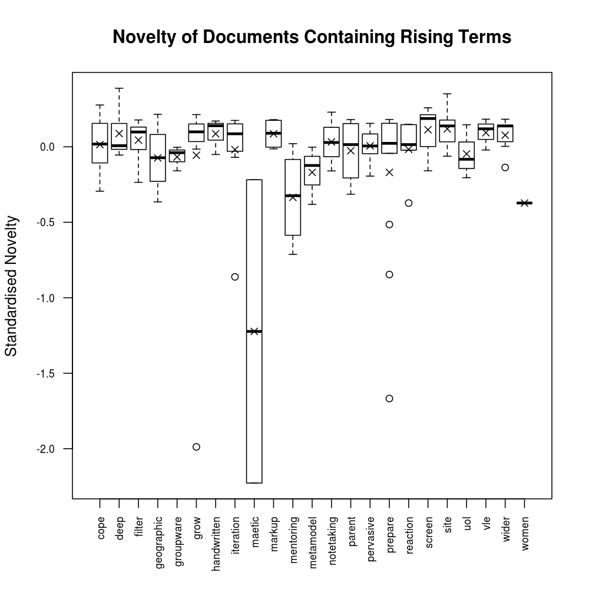
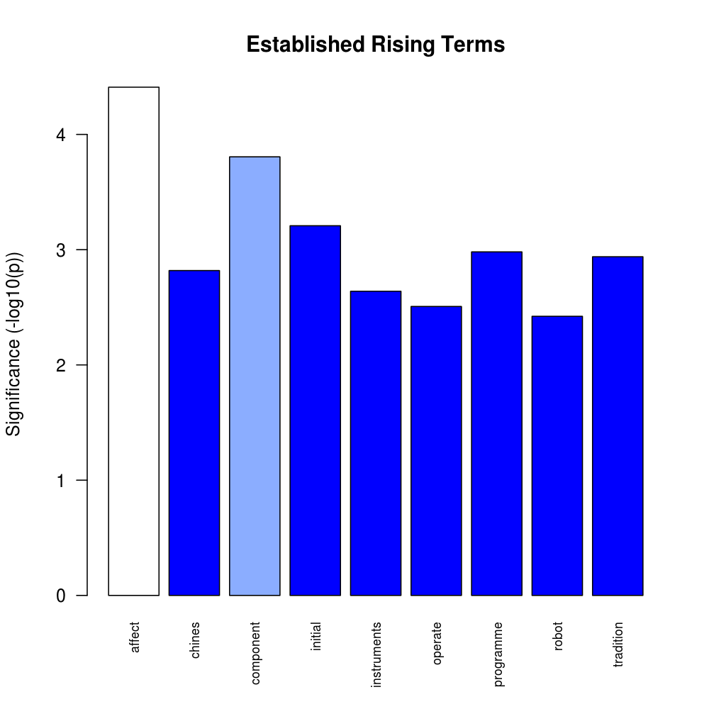
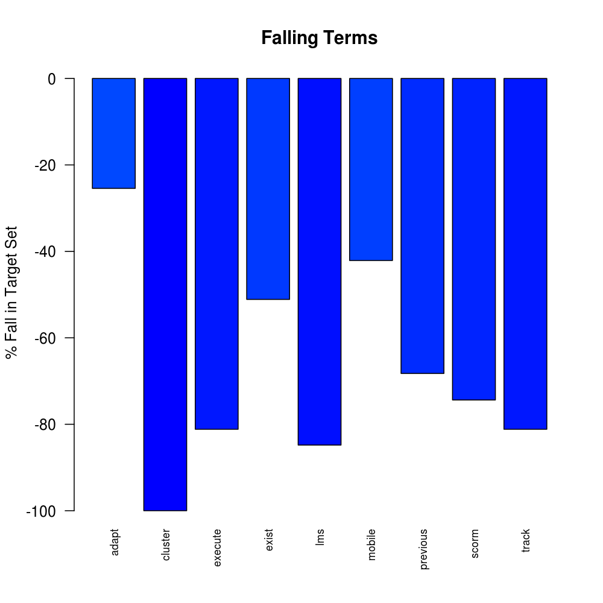

Conference Scan: Rising and Falling Terms - Conference Proceedings from ICALT, CAL, ECTEL and ICWL 2010
This is an un-interpreted and automatically-generated report on emerging, rising and falling terms from the abstracts of the
IEEE International Conference on Advanced Learning Technologies,
European Conference on Technology Enhanced Learning,
International Conference on Web-based Learning
and Computer Assisted Learning Conference.
It is one part of the "Weak Signals Analysis" work of the TEL-Map Project. The same analytical method is also applied to blogs, hence the term "document" is used in plots; this may be equated to an abstract in this report.
All plots will open in a new window/tab as 1000x1000 pixed images if clicked on.
The Method
The analysis involves the application of text mining to the abstracts of the conference proceedings. The set of abstracts from the target year (2010) is contrasted against a set from the previous 4 years. Pearson's "Chi Squared" test is applied to determine the probability that the frequency of terms in both of these two samples could be from the same hypothetical distribution. The probability that the difference in term frequency could be ascribed to chance - assuming this hypothesis is true - must be less than 0.5% for a term to be presented in this report. This is referred to as the "significance threshold" below.
Further informaton about the text mining process being used is available elsewhere but for the purpose of interpretation it should be noted that "stemming" and "stop-word" removal has been used. "Stop-word" removal means that common words are removed before beginning the analysis. "Stemming" involves the conversion of similar words that differ only by their ending into a truncated form that is used as the "term" in the analysis. For the purpose of readability the shortest word that produces the term is generally given, although sometimes the algorithm fails and the stemmed version is shown. This should be born in mind when examining the results.
Four views on the differences between the target and previous years' abstracts are presented:
- New Terms, where this report highlights terms that meet the significance threshold and appear in at least 2 different recent abstracts but not at all in the previous years.
- Rising Terms, where term frequency rises to a statistically-significant level. A term must appear in at least 2 different recent abstracts but must not have an average frequency of more than 0.02% in the previous years set. i.e. the Rising Terms view focusses on possible weak signals, possible new trends.
- Established Terms are similar to "Rising Terms" but appear with a frequency of 0.02% or more on average in the previous years and hence are considered to be established upwards trends rather than indicators of a possible weak signal. Since this report is primarily concerned with Weak Signal detection, relatively little emphasis is given to Established Terms.
- Falling Terms, are those terms showing a decrease between the previous years set and the recent abstracts that exceeds the significance threshold.
For Rising, Established Falling Terms, the % change is calculated on the proportion of all stemmed words that are the term in question. For example if 2.00% of stemmed words in the previous years set was "learn" and 2.12% pertains to the current set, then the rise is 6%.
Statistics and Overall Pattern
Corpus Statistics
There are 328 abstracts in 2010 and 1635 in the 4 previous years. Within these abstracts, which define the corpus, there are 6411 distinct terms after removing stop words and applying stemming. The summary statistics for the number of times each term appears in the corpus are: mean=17.24, median=2, maximum=4186.
For the set of New Terms:
- the number of times each term appears in at least 2 different abstracts the target set but before applying the significance test has: mean=2.727, median=2, maximum=6.
- after selecting terms above the significance threshold, there are 15 terms in scope which appear in 24 out of the 328 target abstracts.
For the set of Rising Terms:
- the % rise from the previous years to the target year before applying the significance test has: mean=160.9, median=62.37, maximum=1848.
- after selecting terms above the significance threshold, there are 21 terms in scope which appear in 79 out of the 328 target abstracts.
The set of Falling Terms (the % fall from the previous years to the target year) before applying the singificance test has summary statistics of: mean=-88.93, median=-100, maximum=-0.07899.
New Terms

Figure 1: The number of terms that appear 1,2,3... times in the target year set not at all in the previous years. In this case there are 6 new terms that appear 4 times. NB: the low end is suppressed due to the requirement that terms appear in at lest 2 documents.
Rising and Falling Terms

Figure 2: Number of terms with a given % rise before applying the significance test.

Figure 3: Number of terms with a given % fall before filtering out those terms that do not meet the criterion of the significance test. A 100% fall indicates that the term does not appear in the target year's abstracts.
Auxillary Measures of Interest
In addition to the primary measures of interest - statistical significance and the percentage change - two more are calculated as an aid to judging the actual, as opposed to statistical, significance of differences between the previous years abstracts and the recent set. The auxillary measures apply to the abstracts and are:
- Novelty, which is a measure of how unusual the abstract is, based on the terms appearing in it, compared to all other abstracts in the corpus.
- Subjectivity, which is a measure of the fraction of the words used that are listed as generally having either positive or negative sentiment associated with their occurrence (the Harvard General Inquirer lexicon is used). A high Subjectivity is assumed to indicate the author's active interest rather than passive observation; active interest may correlate with weak signals. A subjectivity of 0.1 indicates 10% of the words (after removel of stopwords) have connotations of positive or negative sentiment.

Figure 4: Distribution of novelty measure among abstracts.
Novelty= 1 - the minimum distance (specifically the cosine distance) between the abstract and any other abstract in 2010 and 1635 in the 4 previous years.

Figure 5: Distribution of standardised novelty measure among abstracts.
An abstract with median novelty will have a standardised novelty of 0 and a unique abstract a value of 1. Negative values indicate an abstract that has a closer "neighbour" than the median.
Since conference abstracts are quite short, hence contain few terms stopword removal, and the corpus size is modest, the Novelty Measure is typically skewed towards a high value. In this case it is not realistic to select out novel abstracts, whereas a high negative value for the Standardised Novely is a reasonalble indicator of similarity.
The papers containing the highest novelty scores are listed below.

Figure 6: Comparative distribution of positive and negative sentiment and subjectivity acore among abstracts.
The central box has a range defined by the 1st and 3rd quartiles and the limits of the "whiskers" are no more than 1.5x the interquartile range away from the box. Abstracts outside the range of the whiskers are individually plotted as circles and are deemed to be "outliers". The central bar indicates the median and the cross indicates the mean.

Figure 7: Balance of sentiment among the 10% most-subjective abstracts.
The papers containing the highest subjectivity scores are listed below.
Significant New Terms
Significant New Terms appear for the first time in at least 2 different abstracts in the target year of 2010 and meet the 0.5% "significance threshold".

Figure 8: Frequencies of occurrence of the New Terms in the target year.
Figure 9: Wordcloud of frequencies of occurrence of the New Terms in the target year, coloured and sized according to term frequency.
Uses
TagCanvas by "goat 1000".
The papers containing the significant new terms are listed below.

Figure 10: The number of abstracts containing each New Term. A New Term that appears in a large number of abstracts is likely to be a stronger indication of a new trend that a New Term that is concentrated in a single abstract.
Figure 11: Heatmap to show the distribution of the New Terms among abstracts. Red cells indicate the term does not appear. Orange cells indicate a relatively less-frequent term and yellow cells indicate terms that are relatively more frequent
among the New Terms in a given document. This also shows how terms may be clustered according to their occurrence and how abstracts may be clustered according to the Terms within them. The numbers are the identifiers assigned to each paper.
Note: In plots such as the above, where terms are shown they will usually be a short word but may occasionally be truncated or have an unusual ending. This is a consequence of the stemming process, where related words are rendered into a single form that is used in the processing. The word that actually occurs in a given abstract may be one of the related forms. The unusual endings occur when the reverse-lookup algorithm fails. It should also be noted that punctuation is removed so hyphenated forms become concatenated. An unfamiliar term may be an abbreviation or project/product acronym.

Figure 12: Spread of standardised novelty among abstracts containing each New Term.

Figure 13: Spread of subjectivity score among abstracts containing each New Term.
Note: care should be exercised in interpreting these two plots since the number of abstracts containing each term is very small.
The papers containing the significant new terms are listed below.
Significant Rising Terms
Significant Rising Terms are those that meet the significance threshold criterion and appear in at least 2 different abstracts from 2010 but have an average frequency of less than 0.02% (the "Established Term" threshold) in the previous years set.

Figure 14: Significant rising terms and their level of significance (-log
10(probability that the rise is due to chance only)). Colour coding matches the significance value.
Figure 15: Wordcloud of significance level of the Rising Terms in the target year, coloured and sized according to term frequency.
Uses
TagCanvas by "goat 1000".
The papers containing the significant rising terms are listed below.

Figure 16: Significant rising terms and their percentage of rise. Colour coding matches the % rise. The plot is cut off at a ceiling of 800%.

Figure 17: The number of occurrences of the Rising Terms in the past and target sets of abstracts.

Figure 18: Comparison of the proportion of all stemmed words that are the term in question in both the previous and target year.

Figure 19: The number of abstracts containing each Significant Rising Term. The colour coding matches the % rise in the proportion of term occurrence. A Term that appears in a large number of abstracts is likely to be a stronger indication of a new trend that a Term that is concentrated in a single abstract.

Figure 20: Heatmap to show the distribution of the Rising Terms among abstracts. Red cells indicate the term does not appear. Orange cells indicate a relatively less-frequent term and yellow cells indicate terms that are relatively more frequent
in a given document. This also shows how terms may be clustered according to their occurrence and how abstracts may be clustered according to the Terms within them. The numbers are the identifiers assigned to each paper.

Figure 21: Spread of standardised novelty among abstracts containing each Rising Term.

Figure 22: Spread of subjectivity score among abstracts containing each Rising Term.
Note: care should be exercised in interpreting these two plots since the number of abstracts for some terms is very small.
Correlation Between New and Rising Terms
This shows how significant terms from either the "New" and "Rising" sets appear together in abstracts. The visualisation is created using Gephi (v0.8 alpha). Using Gephi provides for good interactivity; the RisingTerm-Co-occurrence.gephi file can be downloaded and used in Gephi.

Figure 23: Graph of Co-occurrence of New and Rising Terms.
Interpreting the graph: terms are colour coded according to clustering aparrent in the results; the nodes are scaled according to the statistical significance; the lines joining the nodes are scaled according to the number of co-occurrences.
The papers containing the significant rising terms are listed below.
Significant Established Terms
These are terms with a statistically-significant increase but with a freqency of 0.02% or more on average in the years prior to 2010 and hence are considered to be established upwards trends rather than indicators of a possible weak signal. Since this report is primarily concerned with Weak Signal detection, relatively little emphasis is given to Established Terms.

Figure 25: Significant rising terms and their percentage of rise. Colour coding is identical to the Rising Term plot. The plot is cut off at a ceiling of 800%.

Figure 26: Significant rising terms and their level of significance (-log
10(probability that the rise is due to chance only)). Colour coding matches the significance value as in the Rising Term plot.
Significant Falling Terms

Figure 27: Significant falling terms and their percentage of fall. Colour coding matches the % fall.
Figure 28: Significant falling terms. Colour coding matches the statistical significance.

Figure 29: The number of occurrences of the Falling Terms in the past and target sets of abstracts.

Figure 30: Comparison of the proportion of all stemmed words that are the term in question in both the previous and target year.
Papers Highlighted by the Analysis
Papers marked "Top 10 Abstract" are those where the abstract contains the greatest number of distinct terms that are either Rising, Established or New.
Papers Containing the Significant New Terms
See the end of this report for information about the source of abstracts and access to the conference proceedings.
Papers Containing "blood"
- A Preliminary Study on Learners Physiological Measurements in Educational Hypermedia.
-
Nikos Tsianos, Panagiotis Germanakos, Zacharias Lekkas, Anna Saliarou, Costas Mourlas, George Samaras, ICALT 2010 (id=636
*Top 10 Abstract*)
Ancillary Measures: Novelty= -0.326635490074887 , Subjectivity= 0.0555555555555556 Max Author Betweenness= 3.760884186881e-07
This paper presents the findings of a preliminary study about the use of bio-feedback sensors in the context of an educational hypermedia environment, skin conductance, blood volume pulse and heart rate physiological data were gathered. The aim of the study was to examine learners emotional arousal variability, and possible correlations of the physiological data with other psychological constructs such as trait and self-reported anxiety. Ten university students participated in two identical experiments, with a mixed between-within experimental design (20 samples). According to the findings, heart rate was significantly correlated with trait and self-reported state anxiety (in the second experiment), but not with academic performance in an on-line exam. Skin conductance and blood volume pulse had only marginal variations, perhaps due to the absence of intense stimuli.
- Self-Esteem Conditioning for Learning Conditioning.
-
Imene Jraidi, Maher Chaouachi, Claude Frasson, ICALT 2010 (id=1355
*Top 10 Abstract*)
Ancillary Measures: Novelty= -0.326635490074887 , Subjectivity= 0.0344827586206897 Max Author Betweenness= 2.10985602884027e-05
In this paper, we propose to introduce the self-esteem component within learning process. More precisely, we explore the effects of learner self-esteem conditioning in a tutoring system. Our approach is based on a subliminal priming method aiming at enhancing implicit self-esteem. An experiment was conducted while participants were outfitted with biofeedback device. Three physiological sensors were used to continuously monitor learners affective reactions namely electroencephalogram, skin conductance and blood volume pulse sensors. The purpose of this work is to analyze the impact of self-esteem conditioning on learning performance on one hand and learners emotional and mental states on the other hand.
Papers Containing "circulatori"
- Collaborative Development of an Augmented Reality Application for Digestive and Circulatory Systems Teaching.
-
David C. Pérez López, Manuel Contero, Mariano Alcañiz Raya, ICALT 2010 (id=903
*Top 10 Abstract*)
Ancillary Measures: Novelty= 0.105608024656814 , Subjectivity= 0.169230769230769 Max Author Betweenness= 4.889149442945e-07
Augmented Reality (AR) appears as a promising technology to improve students motivation and interest and support the learning and teaching process in educational contexts. We present the collaborative development of an AR application to support the teaching of the digestive and circulatory systems. We developed this system with the support of a private Spanish school. The main objective of the application is to show the student in primary school, in the most accurate way, digestive and circulatory systems. By other hand, we also develop our own AR library, HUMANAR, in order to ensure the integration of AR into our game engine and to overcome some drawbacks present in some public libraries. Moreover, our system provides several advantages over the traditional learning as books, videos or practice with animal organs.
- Learning Biology with the Animated Agent in Game Based Learning Environment.
-
Hsin I Yung, ICALT 2010 (id=1211
)
Ancillary Measures: Novelty= 0.0314126706347218 , Subjectivity= 0.125 Max Author Betweenness= 0
The paper delineates the design of the animated agent with using Socratic dialogue to facilitate learning in game based learning environment (the biology adventure). Especially, the biology adventure is designed to model virtual scenarios of the human circulatory system. It presents natural phenomena and inquiry prompts to emphasize the conceptual knowledge of the human circulatory system. Specifically, the spatial aesthetics attract students in the interactive environment that represents the complex biology structure. It is the spirit of the game which students play as the biologist. Through the exploration, students interact with the animated agent to examine their concepts continuously as well as organize their mental models.
Papers Containing "females"
- The Effects of Prior Computer Experience and Gender on High School Students' Learning of Computer Science Concepts from Instructional Simulations.
-
Ming-Puu Chen, ICALT 2010 (id=183
)
Ancillary Measures: Novelty= -0.0434573045670506 , Subjectivity= 0.113636363636364 Max Author Betweenness= 0
The purpose of this study was to examine the effects of prior computer knowledge and gender on high school novices learning of computer science concepts from instructional simulations designed based an experiential-based pedagogical perspective. There were 94 10th-graders taking the introductory course on computer science identified as the low and high prior computer knowledge in this study. Participants motivation and perceived-usefulness toward the employed instructional simulations and performance were evaluated. A quasi-experimental study was employed to examine the effects of prior computer knowledge and gender on dependent measures. The results indicated that (a) the high-prior-knowledge learners possessed higher motivation and perceived-usefulness toward the employed instructional simulations, (b) males revealed higher motivation and perceived-usefulness than females, (c) females outperformed males on the performance evaluation, and finally, (d) the low prior computer knowledge learners performed as well as the high-prior-knowledge learners while learning from instructional simulations.
- Offering Early Success Experiences in Software Construction: Experiences Teaching Dynamic Website Development to High School Girls.
-
Mary Beth Rosson, Hansa Sinha, Tisha Hansford, Jan Mahar, ICALT 2010 (id=1441
*Top 10 Abstract*)
Ancillary Measures: Novelty= -0.147012264668076 , Subjectivity= 0.09375 Max Author Betweenness= 2.5448649664562e-06
In spite of comparable levels of computer access and use by males and females at home and school, women continue to be under represented in careers and education related to the computer and information sciences. In this paper, we describe outreach activities taking place within the wConnect project, a research effort aimed at building a developmental learning community of women in which members at different levels of sophistication support each other at different stages of their education and careers in computing and related fields. More specifically, we report on a series of hands-on workshops that were designed and delivered by undergraduate members of the community to high school girls. We describe the design and conduct of the workshop activities, the girls reactions, our own reflections and implications for future work.
Papers Containing "fingerprint"
- Web Tests in LMS Using Fingerprint Identification.
-
Charo Gil, Manuel Castro, Mudasser F. Wyne, Russ Meier, ICALT 2010 (id=514
)
Ancillary Measures: Novelty= 0.191107270315688 , Subjectivity= 0.0454545454545455 Max Author Betweenness= 0.0004741472
This project aims to solve the problems of identity authentication of users in online tests. The project integrates a biometric identification module based on techniques of fingerprint recognition in the educational communities and learning management systems where most of the courses for distance education are held. The project aims to cover all the weaknesses that traditionally have the password or user name. The implementation starts from the own fingerprint identification system developed to its final integration in the new environment.
- Automatic Detection of Local Reuse.
-
Arno Mittelbach, Lasse Lehmann, Christoph Rensing, Ralf Steinmetz, ECTEL 2010 (id=1873
)
Ancillary Measures: Novelty= 0.0298098924608872 , Subjectivity= 0.0617283950617284 Max Author Betweenness= 0.0007465145
Local reuse detection is a prerequisite for a multitude of tasks ranging from document management and information retrieval to web search or plagiarism detection. Its results can be used to support authors in creating new learning resources or learners in finding existing ones by providing accurate suggestions for related documents. While the detection of local text reuse, i.e. reuse of parts of documents, is covered by various approaches, reuse detection for object-based documents has been hardly considered yet. In this paper we propose a new fingerprinting technique for local reuse detection for both text-based and object-based documents which is based on the contiguity of documents. This additional information, which is generally disregarded by existing approaches, allows the creation of shorter and more flexible fingerprints. Evaluations performed on different corpora have shown that it performs better than existing approaches while maintaining a significantly lower storage consumption.
Papers Containing "girls"
- Offering Early Success Experiences in Software Construction: Experiences Teaching Dynamic Website Development to High School Girls.
-
Mary Beth Rosson, Hansa Sinha, Tisha Hansford, Jan Mahar, ICALT 2010 (id=1441
*Top 10 Abstract*)
Ancillary Measures: Novelty= -0.147012264668076 , Subjectivity= 0.09375 Max Author Betweenness= 2.5448649664562e-06
In spite of comparable levels of computer access and use by males and females at home and school, women continue to be under represented in careers and education related to the computer and information sciences. In this paper, we describe outreach activities taking place within the wConnect project, a research effort aimed at building a developmental learning community of women in which members at different levels of sophistication support each other at different stages of their education and careers in computing and related fields. More specifically, we report on a series of hands-on workshops that were designed and delivered by undergraduate members of the community to high school girls. We describe the design and conduct of the workshop activities, the girls reactions, our own reflections and implications for future work.
- Spatializing Social Practices in Mobile Game-Based Learning.
-
Susan Gwee, Yam San Chee, Ek Ming Tan, ICALT 2010 (id=1538
*Top 10 Abstract*)
Ancillary Measures: Novelty= 0.0942358781333739 , Subjectivity= 0 Max Author Betweenness= 0
The objectives of this paper are to explore the characteristics of patterns of participation in social and game-play spaces outside the classroom of 10 fifteen-year-olds engaging in mobile game-based learning, and to determine whether there are gender differences in their use of social and game-play spaces. The data indicate some evidence of gender differences in their use. The boys in the study tended to engage in mobile game-based learning more than girls in game-play spaces. The girls tended to use the social space more than the boys and were especially more active in their use of the in-game chat system.
Papers Containing "heart"
- A Preliminary Study on Learners Physiological Measurements in Educational Hypermedia.
-
Nikos Tsianos, Panagiotis Germanakos, Zacharias Lekkas, Anna Saliarou, Costas Mourlas, George Samaras, ICALT 2010 (id=636
*Top 10 Abstract*)
Ancillary Measures: Novelty= -0.326635490074887 , Subjectivity= 0.0555555555555556 Max Author Betweenness= 3.760884186881e-07
This paper presents the findings of a preliminary study about the use of bio-feedback sensors in the context of an educational hypermedia environment, skin conductance, blood volume pulse and heart rate physiological data were gathered. The aim of the study was to examine learners emotional arousal variability, and possible correlations of the physiological data with other psychological constructs such as trait and self-reported anxiety. Ten university students participated in two identical experiments, with a mixed between-within experimental design (20 samples). According to the findings, heart rate was significantly correlated with trait and self-reported state anxiety (in the second experiment), but not with academic performance in an on-line exam. Skin conductance and blood volume pulse had only marginal variations, perhaps due to the absence of intense stimuli.
- Prediction of Players Motivational States Using Electrophysiological Measures during Serious Game Play.
-
Lotfi Derbali, Claude Frasson, ICALT 2010 (id=710
*Top 10 Abstract*)
Ancillary Measures: Novelty= 0.150108061847768 , Subjectivity= 0.183333333333333 Max Author Betweenness= 2.10985602884027e-05
This study investigated players motivation during serious game play. It is based on a theoretical model of motivation. Statistical analysis showed a significant increase of motivation during the game. This study tried to dissect predictors of Players Motivational States. Multiple linear regression showed statistical significance of specific electrophysiological data. The theta wave in the frontal regions and motivation were positively correlated. High-beta wave in the left-center region was also a significant predictor for high level of motivation. Skin conductance was also a significant predictor for motivation. However, we could not find a significant correlation between players motivation and their heart rate responses.
Papers Containing "leader"
- Deepthink: A Second Life Environment for Part-time Research Students at a Distance.
-
Lucia Rapanotti, Leonor Barroca, Maria Vargas-Vera, Ahmad J. Reeves, ICALT 2010 (id=575
)
Ancillary Measures: Novelty= 0.000352692261130538 , Subjectivity= 0.0227272727272727 Max Author Betweenness= 0
This paper reports on the design of a Second Life campus for a new innovative post-graduate research programme at the Open University, UK, a world leader in supported distance higher education. The programme, launched in October 2009, is a part-time Master of Philosophy (MPhil) to be delivered at a distance, supported by a blend of synchronous and asynchronous Internet technologies. This paper briefly discusses the pedagogical thinking behind the Second Life campus, and the way the implementation was designed to meet the pedagogy. The paper also reports on the outcome of an early evaluation we have conducted.
- A Chorus Learning Support System Based on the Tutoring Knowledge of the Chorus Leader.
-
Mizue Kayama, Kazunori Itoh, Kazushi Asanuma, Masami Hashimoto, Makoto Otani, ICALT 2010 (id=1425
)
Ancillary Measures: Novelty= 0.130466443008039 , Subjectivity= 0.121621621621622 Max Author Betweenness= 0.0004488991
The purpose of this study is to explore a chorus learning support environment based on the tutoring knowledge of the chorus leader. In general chorus practice, a chorus leader tends to instruct his chorus members based not on score information, but a chorus leaders sense of value and/or his musical philosophy. We try to extract the tutoring knowledge necessary to evaluate/review a singing voice from the chorus leader. The extracted knowledge is expressed in a computational form and implemented in a learning support system. In this paper, a chorus learning support system is proposed. At first, the tutoring knowledge of a chorus leader is described. Next, the architecture and functions of the proposed system are shown. Finally, we evaluate the adequacy of the extracted knowledge and the effectiveness of chorus learning with our system.
Papers Containing "males"
- The Effects of Prior Computer Experience and Gender on High School Students' Learning of Computer Science Concepts from Instructional Simulations.
-
Ming-Puu Chen, ICALT 2010 (id=183
)
Ancillary Measures: Novelty= -0.0434573045670506 , Subjectivity= 0.113636363636364 Max Author Betweenness= 0
The purpose of this study was to examine the effects of prior computer knowledge and gender on high school novices learning of computer science concepts from instructional simulations designed based an experiential-based pedagogical perspective. There were 94 10th-graders taking the introductory course on computer science identified as the low and high prior computer knowledge in this study. Participants motivation and perceived-usefulness toward the employed instructional simulations and performance were evaluated. A quasi-experimental study was employed to examine the effects of prior computer knowledge and gender on dependent measures. The results indicated that (a) the high-prior-knowledge learners possessed higher motivation and perceived-usefulness toward the employed instructional simulations, (b) males revealed higher motivation and perceived-usefulness than females, (c) females outperformed males on the performance evaluation, and finally, (d) the low prior computer knowledge learners performed as well as the high-prior-knowledge learners while learning from instructional simulations.
- Offering Early Success Experiences in Software Construction: Experiences Teaching Dynamic Website Development to High School Girls.
-
Mary Beth Rosson, Hansa Sinha, Tisha Hansford, Jan Mahar, ICALT 2010 (id=1441
*Top 10 Abstract*)
Ancillary Measures: Novelty= -0.147012264668076 , Subjectivity= 0.09375 Max Author Betweenness= 2.5448649664562e-06
In spite of comparable levels of computer access and use by males and females at home and school, women continue to be under represented in careers and education related to the computer and information sciences. In this paper, we describe outreach activities taking place within the wConnect project, a research effort aimed at building a developmental learning community of women in which members at different levels of sophistication support each other at different stages of their education and careers in computing and related fields. More specifically, we report on a series of hands-on workshops that were designed and delivered by undergraduate members of the community to high school girls. We describe the design and conduct of the workshop activities, the girls reactions, our own reflections and implications for future work.
Papers Containing "offtask"
- Design for Off-task Interaction - Rethinking Pedagogy in Technology Enhanced Learning.
-
Agneta Gulz, Annika Silvervarg, Björn Sjödén, ICALT 2010 (id=914
)
Ancillary Measures: Novelty= 0.06797640776216 , Subjectivity= 0.171428571428571 Max Author Betweenness= 0
In this paper, we argue for the design of off-task interaction in technology enhanced learning. This implies a rethinking of pedagogy which can substantially contribute to achieving specific learning goals. We describe a work-in-progress and provide concrete examples of how we deal with relevant issues raised by allowing for off-task interactions in an educational math game as an integrated learning system.
- Enhancing Learning with Off-Task Social Dialogues.
-
Jozef Tvarozek, Mária Bieliková, ECTEL 2010 (id=1891
)
Ancillary Measures: Novelty= -0.269245542558603 , Subjectivity= 0.0454545454545455 Max Author Betweenness= 4.513061024257e-07
In Peoplia, a socially intelligent tutoring agent helps students learn by augmenting learning opportunities with social features. The tutoring agent engages in off-task conversations with the students before and after the instructional activities, motivating them to work with the system more successfully. We describe the tutors architecture and early experiments in the domain of middle school mathematics. Students who engaged with the socially intelligent agent liked the system more, and attained higher learning gains.
Papers Containing "pulse"
- A Preliminary Study on Learners Physiological Measurements in Educational Hypermedia.
-
Nikos Tsianos, Panagiotis Germanakos, Zacharias Lekkas, Anna Saliarou, Costas Mourlas, George Samaras, ICALT 2010 (id=636
*Top 10 Abstract*)
Ancillary Measures: Novelty= -0.326635490074887 , Subjectivity= 0.0555555555555556 Max Author Betweenness= 3.760884186881e-07
This paper presents the findings of a preliminary study about the use of bio-feedback sensors in the context of an educational hypermedia environment, skin conductance, blood volume pulse and heart rate physiological data were gathered. The aim of the study was to examine learners emotional arousal variability, and possible correlations of the physiological data with other psychological constructs such as trait and self-reported anxiety. Ten university students participated in two identical experiments, with a mixed between-within experimental design (20 samples). According to the findings, heart rate was significantly correlated with trait and self-reported state anxiety (in the second experiment), but not with academic performance in an on-line exam. Skin conductance and blood volume pulse had only marginal variations, perhaps due to the absence of intense stimuli.
- Self-Esteem Conditioning for Learning Conditioning.
-
Imene Jraidi, Maher Chaouachi, Claude Frasson, ICALT 2010 (id=1355
*Top 10 Abstract*)
Ancillary Measures: Novelty= -0.326635490074887 , Subjectivity= 0.0344827586206897 Max Author Betweenness= 2.10985602884027e-05
In this paper, we propose to introduce the self-esteem component within learning process. More precisely, we explore the effects of learner self-esteem conditioning in a tutoring system. Our approach is based on a subliminal priming method aiming at enhancing implicit self-esteem. An experiment was conducted while participants were outfitted with biofeedback device. Three physiological sensors were used to continuously monitor learners affective reactions namely electroencephalogram, skin conductance and blood volume pulse sensors. The purpose of this work is to analyze the impact of self-esteem conditioning on learning performance on one hand and learners emotional and mental states on the other hand.
Papers Containing "selfreport"
- A Preliminary Study on Learners Physiological Measurements in Educational Hypermedia.
-
Nikos Tsianos, Panagiotis Germanakos, Zacharias Lekkas, Anna Saliarou, Costas Mourlas, George Samaras, ICALT 2010 (id=636
*Top 10 Abstract*)
Ancillary Measures: Novelty= -0.326635490074887 , Subjectivity= 0.0555555555555556 Max Author Betweenness= 3.760884186881e-07
This paper presents the findings of a preliminary study about the use of bio-feedback sensors in the context of an educational hypermedia environment, skin conductance, blood volume pulse and heart rate physiological data were gathered. The aim of the study was to examine learners emotional arousal variability, and possible correlations of the physiological data with other psychological constructs such as trait and self-reported anxiety. Ten university students participated in two identical experiments, with a mixed between-within experimental design (20 samples). According to the findings, heart rate was significantly correlated with trait and self-reported state anxiety (in the second experiment), but not with academic performance in an on-line exam. Skin conductance and blood volume pulse had only marginal variations, perhaps due to the absence of intense stimuli.
- An Analysis of Students' Intention to Use Ubiquitous Video Game-Based Learning System.
-
Chun-Yi Shen, Han-Bin Chang, Wen-Chih Chang, Te-Hua Wang, ICALT 2010 (id=815
)
Ancillary Measures: Novelty= -0.10677095155003 , Subjectivity= 0.0754716981132075 Max Author Betweenness= 3.1127e-05
This study analyzed students self-report on their intention to use an ubiquitous video game-based learning system. Participants were 30 college students in Taiwan. They completed a questionnaire measuring their responses to six constructs which formed a research model based on Technology Acceptance Model. Structural Equation Modeling was used as the technique for data analysis. Results showed that attitude and intention were significantly explained by perceived playfulness. Additionally, perceived usefulness was significantly explained by perceived ease of use. Limitation and future research directions are also discussed.
- Who Students Interact With? A Social Network Analysis Perspective on the Use of Twitter in Language Learning.
-
Carsten Ullrich, Kerstin Borau, Karen Stepanyan, ECTEL 2010 (id=2050
)
Ancillary Measures: Novelty= -1.41156653086135 , Subjectivity= 0.02 Max Author Betweenness= 0.0018988811
This paper reports student interaction patterns and self-reported results of using Twitter microblogging environment. The study employs longitudinal probabilistic social network analysis (SNA) to identify the patterns and trends of network dynamics. It is building on earlier works that explore associations of student achievement records with the observed network measures. It integrates gender as an additional variable and reports some relation with interaction patterns. Additionally, the paper reports the results of a questionnaire that enables further discussion on the communication patterns.
Papers Containing "skin"
- A Preliminary Study on Learners Physiological Measurements in Educational Hypermedia.
-
Nikos Tsianos, Panagiotis Germanakos, Zacharias Lekkas, Anna Saliarou, Costas Mourlas, George Samaras, ICALT 2010 (id=636
*Top 10 Abstract*)
Ancillary Measures: Novelty= -0.326635490074887 , Subjectivity= 0.0555555555555556 Max Author Betweenness= 3.760884186881e-07
This paper presents the findings of a preliminary study about the use of bio-feedback sensors in the context of an educational hypermedia environment, skin conductance, blood volume pulse and heart rate physiological data were gathered. The aim of the study was to examine learners emotional arousal variability, and possible correlations of the physiological data with other psychological constructs such as trait and self-reported anxiety. Ten university students participated in two identical experiments, with a mixed between-within experimental design (20 samples). According to the findings, heart rate was significantly correlated with trait and self-reported state anxiety (in the second experiment), but not with academic performance in an on-line exam. Skin conductance and blood volume pulse had only marginal variations, perhaps due to the absence of intense stimuli.
- Prediction of Players Motivational States Using Electrophysiological Measures during Serious Game Play.
-
Lotfi Derbali, Claude Frasson, ICALT 2010 (id=710
*Top 10 Abstract*)
Ancillary Measures: Novelty= 0.150108061847768 , Subjectivity= 0.183333333333333 Max Author Betweenness= 2.10985602884027e-05
This study investigated players motivation during serious game play. It is based on a theoretical model of motivation. Statistical analysis showed a significant increase of motivation during the game. This study tried to dissect predictors of Players Motivational States. Multiple linear regression showed statistical significance of specific electrophysiological data. The theta wave in the frontal regions and motivation were positively correlated. High-beta wave in the left-center region was also a significant predictor for high level of motivation. Skin conductance was also a significant predictor for motivation. However, we could not find a significant correlation between players motivation and their heart rate responses.
- Self-Esteem Conditioning for Learning Conditioning.
-
Imene Jraidi, Maher Chaouachi, Claude Frasson, ICALT 2010 (id=1355
*Top 10 Abstract*)
Ancillary Measures: Novelty= -0.326635490074887 , Subjectivity= 0.0344827586206897 Max Author Betweenness= 2.10985602884027e-05
In this paper, we propose to introduce the self-esteem component within learning process. More precisely, we explore the effects of learner self-esteem conditioning in a tutoring system. Our approach is based on a subliminal priming method aiming at enhancing implicit self-esteem. An experiment was conducted while participants were outfitted with biofeedback device. Three physiological sensors were used to continuously monitor learners affective reactions namely electroencephalogram, skin conductance and blood volume pulse sensors. The purpose of this work is to analyze the impact of self-esteem conditioning on learning performance on one hand and learners emotional and mental states on the other hand.
Papers Containing "stepbystep"
- ALGOWEB: A Web-Based Environment for Learning Introductory Programming.
-
Ricardo Vargas Dorneles, Delcino Picinin Jr., André Gustavo Adami, ICALT 2010 (id=1640
)
Ancillary Measures: Novelty= 0.197258635099727 , Subjectivity= 0.0689655172413793 Max Author Betweenness= 0
This paper describes an environment named AlgoWeb for learning introductory programming. AlgoWeb has a syntax highlighting editor for structured Portuguese, step-by-step processing, breakpoints and monitoring variable values. In addition, AlgoWeb has a set of algorithmic problems that encompasses the concepts and techniques taught in introductory programming courses. AlgoWeb can also check the correctness of the solution (with respect to previously defined input and output data) submitted by its users for the problems available in the environment. All the interactions between the users and the environment are registered, providing a valuable tool to evaluate the progress of each student or class.
- Automatically Constructing a Compact Concept Map of Dance Motion with Motion Captured Data.
-
Yang Yang, Howard Leung, Lihua Yue, Liqun Deng, ICWL 2010 (id=2288
)
Ancillary Measures: Novelty= 0.119389135833952 , Subjectivity= 0.162162162162162 Max Author Betweenness= 0.0022478698
In recent years, E-learning has become a popular research topic with its wide applications. As an important factor of E-learning, concept map is a powerful way to manage knowledge. In this paper, we describe our approach for determining a compact concept map of an input dance motion obtained from the 3D motion capture technology. The dance motion is analyzed to extract the repetitive patterns and then the prerequisite relations are computed as the inclusion relation among patterns. A concept map can then be constructed automatically for illustrating such relations. The transitive reduction algorithm is applied to remove the redundant edges such that the resulting concept map retains a compact representation of the dance structure. This concept map can be used to generate dance lessons such that a learner can learn the dance motion in a step-by-step and logical manner.
- A Scaffolding Support System for English Essay Reading.
-
Jia-Jiunn Lo, Shiou-Wen Yeh, Chao-Shien Sung, ICWL 2010 (id=2345
)
Ancillary Measures: Novelty= 0.109784196773639 , Subjectivity= 0.0571428571428571 Max Author Betweenness= 0.0002247504
This research provides students a three-phased English essay reading scaffolding support system by leading them through a systematic process. By integrating Reading annotator, a web-based annotation system for reading support, the system can help students know how to enhance their reading abilities. Reading annotator helps students visual interactively to analyze basic structure of essays by identifying key elements of each paragraph such as topic sentence, controlling idea, and supporting details. Based on the key elements of each paragraph, a process-oriented structure-based scaffolding support environment is developed to help students know how to read essays with various rhetorical forms step-by-step by analyzing the essay organizations. The system applies not only text structure, visual representations, summarization, and questions reading strategies but also reading to summarize and reading to analyze reading levels. Moreover, the proposed system accommodates the scaffolding strategies such as providing procedural facilitator, guided learning, using external representational scaffolds, helping the student focus thinking on only those items that were important for the task.
Papers Containing "wall"
- Smart Timetable Plate for Classroom.
-
Yuan-Chih Yu, Shing-chern D. You, Dwen-Ren Tsai, ICALT 2010 (id=1625
)
Ancillary Measures: Novelty= 0.161425370323043 , Subjectivity= 0.192307692307692 Max Author Betweenness= 0
Classroom usually has a timetable plate embedded on the wall near the front door. However, the only purpose for displaying classrooms timetable cannot fulfill the future digital classroom requirement. They need more automatic, integrated, and intelligent functionality in the classroom environment. Besides, the vision of future smart classroom is to select sustainable technology solutions that have the possibilities of dramatically improving the instructional delivery process and to engage the student in their learning experience. Therefore, the aspiration for providing more intelligent capability will go back to the improvement of classroom environment itself. Within the classroom, how to create a smart space is our goal. By means of introducing smart timetable plate, we can create a new use case for the application of smart classroom. The creative model not only bring the new style school living but also encourage the reform of traditional classroom environment.
- Affordances of Presentations in Multi-Display Learning Spaces for Supporting Small Group Discussion.
-
Brett Bligh, Mike Sharples, ECTEL 2010 (id=1954
)
Ancillary Measures: Novelty= -0.0311399532659098 , Subjectivity= 0.08 Max Author Betweenness= 0.0002427028
Learning and teaching is often supported using presentation software to display pre-authored slides in sequence over time. We wish to consider the pedagogic implications of Multi-Display Learning Spaces (MD-LS), where multiple partitions of presented information overlay a larger area within the physical environment. We discuss the use in university teaching of the Multi-Slides plug-in for popular presentation software, along with multiple projectors, to cascade multiple slides of information simultaneously across two walls of a seminar room. We use examples derived from postgraduate teaching to argue that MD-LS allow for enabling juxtapositions of visual materials which can be used by students and tutors as cognitive tools to promote reasoned, argumentational dialogue. We consider the spatial implications for learning, and relate MD-LS to attempts within the literature to conceive classrooms of the future.
- Tackling HCI Challenges of Creating Personalised, Pervasive Learning Ecosystems.
-
Judy Kay, Bob Kummerfeld, ECTEL 2010 (id=2144
)
Ancillary Measures: Novelty= 0.027831928924394 , Subjectivity= 0.105263157894737 Max Author Betweenness= 0
This paper explores two classes of emerging technology that offer the promise to provide radically improved ways to support lifelong learning. We particularly focus on the human computer interaction (HCI) challenges that must be addressed if that promise is to be realised. One technology is personalisation, based on a long term learner model which captures the learners knowledge, preferences and other attributes. We discuss the roles of an explicit learner model that is a first class software entity, with APIs for programmers as well as effective user interfaces that can give users control over their model and its use. We present the PLUS framework that provides the infrastructure for personalised learning, and how its Accretion-Resolution representation supports both flexible reasoning for personalisation by programs and provides the foundation for users to control the whole personalisation process. We link the PLUS framework to a second class of technology, the fast-changing and increasingly ubiquitous personal mobile devices and the emerging embedded surface computing devices, such as tabletop and shared wall displays. We show how we have tackled several of the HCI challenges that are key to both these technologies.
Papers Containing "wave"
- Prediction of Players Motivational States Using Electrophysiological Measures during Serious Game Play.
-
Lotfi Derbali, Claude Frasson, ICALT 2010 (id=710
*Top 10 Abstract*)
Ancillary Measures: Novelty= 0.150108061847768 , Subjectivity= 0.183333333333333 Max Author Betweenness= 2.10985602884027e-05
This study investigated players motivation during serious game play. It is based on a theoretical model of motivation. Statistical analysis showed a significant increase of motivation during the game. This study tried to dissect predictors of Players Motivational States. Multiple linear regression showed statistical significance of specific electrophysiological data. The theta wave in the frontal regions and motivation were positively correlated. High-beta wave in the left-center region was also a significant predictor for high level of motivation. Skin conductance was also a significant predictor for motivation. However, we could not find a significant correlation between players motivation and their heart rate responses.
- Students' Competitive Preferences on Multiuser Wireless Sensor Classroom Interactive Environment.
-
Ben Chang, Chien Wen Chen, ICALT 2010 (id=834
)
Ancillary Measures: Novelty= 0.188939849549064 , Subjectivity= 0.02 Max Author Betweenness= 0.0001127989
The study reports a highly interactive classroom environment in which the students do not use the desktop, laptop or PDA with keyboard, mouse, or pen, but the hand-motion as an input method. The classroom setting is no more one student with one computer, but the whole class with a large shared display and all the students interact with their peers on the display waving their hand and competing with each other simultaneously. Twelve undergraduate students were involved in this study, and their competitive preferences were elaborated. The usability test indicated that the system was acceptable, and the sociability evaluation showed that the classroom climate was changed dramatically.
- Using Social Software for Teamwork and Collaborative Project Management in Higher Education.
-
Na Li, Carsten Ullrich, Sandy El Helou, Denis Gillet, ICWL 2010 (id=2323
)
Ancillary Measures: Novelty= -0.102334977981465 , Subjectivity= 0.0727272727272727 Max Author Betweenness= 0.0036021526
This paper discusses the potential role of social software in supporting teamwork and collaborative project management in higher education. Based on the fact that social software has been widely spread among young students nowadays, using it for collaborative learning is believed to increase students involvement and create learning incentives. Two social software platforms, Graaasp and Google Wave are examined in terms of sustaining collaborative learning activities. Relevant existing features and possible extensions that enhance the learning experience are addressed. Benefits and challenges resulting from the bottom-up learning paradigm are also presented.
Papers Containing the Significant Rising Terms
See the end of this report for information about the source of abstracts and access to the conference proceedings.
Papers Containing "besides"
- 3D Digital Simulations in Participative Design of the Boulevard in Putrajaya: Implications on Academic, Organizational, and Informal Learning.
-
Rashidah Ab. Rahman, ICALT 2010 (id=197
)
Ancillary Measures: Novelty= 0.260531216577313 , Subjectivity= 0.103896103896104 Max Author Betweenness= 0
This paper is based on the theme `Virtual Worlds for Academic, Organizational, and Life-Long Learning. It reports the implications on informal learning through a research that uses 3D digital simulations of proposed streetscape design schemes for the main boulevard of Putrajaya, Malaysia. The exercise was in consideration of the organizational focus of Putrajaya, the new administrative capital of Malaysia, to utilize electronic governance in its day-to-day operation. Besides gauging the publics receptivity to the design proposals and digital approach, consulting the public using the digital simulations in a participative design spirit is interpreted as a potential aspect of e-governance. The paper looks at the ramifications on communication and acquisition of new knowledge for the public and the students-researchers primarily and the city authority secondarily. The insights will highlight aspects to consider in implementing this process of digital-based participative design in the future.
- Re-engineering of Pedagogical Scenarios Using the Data Combination Language and Usage Tracking Language.
-
Diem Pham Thi Ngoc, Sébastien Iksal, Christophe Choquet, ICALT 2010 (id=562
)
Ancillary Measures: Novelty= -0.636066101302038 , Subjectivity= 0.108108108108108 Max Author Betweenness= 0.0014361789
The tracks analysis concerning students actions logged by Technology Enhanced Learning systems can help teacher to improve their pedagogical scenarios making them relevant to students. Besides, sharing and reusing teachers know-how and experience in the session analysis of learning systems also facilitate their scenario enhancement. In this paper, we present our proposal for obtaining these goals. We first describe the calculation method of pedagogical indicators from the tracks collected using the Usage Tracking Language and Data Combination Language. Then, we present our developed tool which allows executing these indicators. We also present results which validate our proposal with the tracks from the real learning environment. Our approach can be used to support engineering and re-engineering of pedagogical scenarios in Technology Enhanced Learning systems.
- Identifying Animals with Dynamic Location-aware and Semantic Hierarchy-Based Image Browsing for Different Cognitive Style Learners.
-
Dunwei Wen, Ming-Chi Liu, Yueh-Min Huang, Kinshuk, Pi-Hsia Hung, ICALT 2010 (id=672
)
Ancillary Measures: Novelty= 0.0838081088055628 , Subjectivity= 0.0930232558139535 Max Author Betweenness= 0.0260216467
Lack of overall ecological knowledge structure is a critical reason for learners failure in keyword-based search. To address this issue, this paper firstly presents the dynamic location-aware and semantic hierarchy (DLASH) designed for the learners to browse images, which aims to identify learners current interesting sights and provide adaptive assistance accordingly in ecological learning. The main idea is based on the observation that the species of plants and animals are discontinuously distributed around the planet, and hence their semantic hierarchy, besides its structural similarity with WordNet, is related to location information. This study then investigates how different cognitive styles of the learners influence the use of DLASH in their image browsing. The preliminary results show that the learners perform better when using DLASH based image browsing than using the Flickr one. In addition, cognitive styles have more effects on image browsing in the DLASH version than in the Flickr one.
- Using Tangible Learning Companions in English Education.
-
Yi Hsuan Wang, Shelley Shwu-Ching Young, Jyh-Shing Roger Jang, ICALT 2010 (id=691
)
Ancillary Measures: Novelty= -0.473363931024283 , Subjectivity= 0.0701754385964912 Max Author Betweenness= 0.0007855506
The tangible learning companions were made to interact with learners by speaking up to 15 basic daily greetings such as and so forth. In this study, we did the investigation and evaluation of learners attitude and learning effect by using tangible learning companions in learning English conversation. There were 61 learners participated in this study. The results of this study revealed the learning effect of using tangible learning companions in English conversation was generally positive for the elementary school. The speaking ability of young students could be improved. Besides, the learners learning engagement and motivation was enhanced after they practiced English conversation with tangible learning companions.
- An Approach for Designing and Implementing a Computerized Adaptive Testing Tool for Applicants with Disabilities.
-
Monjia Balloumi, Mohsen Laâbidi, Mohamed Jemni, ICALT 2010 (id=1059
)
Ancillary Measures: Novelty= -0.944336142151212 , Subjectivity= 0.160714285714286 Max Author Betweenness= 0.0015743919
E-learning has made considerable progress in the last decades allowing different kinds of adaptation to the student profile or the learning objectives. But few E-learning standards take accessibility into account, making learners with disabilities find difficulties taking full advantage of E-learning platforms. Besides, most E-learning platforms present tests in a traditional format regardless of their known limitations, more important for applicants with special needs. However, it could be possible to integrate adaptive and more accessible E-testing functionalities in the E-learning platforms. This paper discusses the process of developing such an adaptive testing approach, which could be integrated in the Moodle platform, by presenting some of its principles, architectural elements and algorithms.
- Integration of External Tools in Virtual Learning Environments: Main Design Issues and Alternatives.
-
Carlos Alario-Hoyos, Juan I. Asensio-Pérez, Miguel L. Bote-Lorenzo, Eduardo Gómez-Sánchez, Guillermo Vega-Gorgojo, Adolfo Ruiz-Calleja, ICALT 2010 (id=1149
)
Ancillary Measures: Novelty= -0.0544643236755557 , Subjectivity= 0.0625 Max Author Betweenness= 0.0019188367
The integration of existing educational computer-based tools is a current research trend aimed at increasing the range of learning situations that can be supported by most widely adopted Virtual Learning Environments (VLEs). Nevertheless, due to the technological and functional heterogeneity of both tools and VLEs, there is an integration cost that must be assumed and that varies depending on several design issues. This paper identifies the issues to be tackled when designing a VLE or a tool and the effects that the different alternatives may have in the integration cost. Besides, the paper discusses the advantages and drawbacks of previous research proposals when dealing with such issues. The final goal is to understand the impact of design decisions in the chances for acceptance of the adopted integration approaches.
- A Flexible Mechanism for Providing Adaptivity Based on Learning Styles in Learning Management Systems.
-
Sabine Graf, Kinshuk, Cindy Ives, ICALT 2010 (id=1385
)
Ancillary Measures: Novelty= -0.00775966531599937 , Subjectivity= 0.160919540229885 Max Author Betweenness= 0.0260216467
While todays learning management systems (LMSs) provide lot of support for teachers to assist them in holding online courses, they typically do not consider students individual differences in the composition and structure of courses. In this paper, we introduce a mechanism for extending LMSs functionality to provide learners with courses that fit their individual learning styles, using adaptive sorting and adaptive annotation in order to highlight the learning objects (LOs) that support students learning process the best. The mechanism enables teachers to add adaptivity to their already existing courses, using a flexible course structure in order to avoid limiting the richness of the learning resources and materials. Besides being flexible to teachers needs, the adaptive mechanism aims at asking teachers for as little as possible additional effort when using it, requiring teachers only to choose the corresponding type of LO when creating an LO in the authoring tool of the LMS.
- A Proposal to Improve the Simple Query Interface (SQI) of Learning Objects Repositories.
-
Salvador Otón, José Ramón Hilera, Eva García, Antonio García-Cabot, Luis de Marcos, Antonio Ortiz, José Antonio Gutiérrez de Mesa, José-Javier Martínez, José María Gutiérrez, Roberto Barchino, ICALT 2010 (id=1600
)
Ancillary Measures: Novelty= -0.370104195445288 , Subjectivity= 0.0980392156862745 Max Author Betweenness= 1.504353674752e-07
This paper proposes to improve the Simple Query Interface (SQI), designed to query learning object repositories, modifying a few existing methods to generate new ones. Replacement is not intended, instead, our proposal is to create new methods that incorporate several enhancements in order to enable compatibility with currently compliant systems that use the old methods. Besides, new methods are also proposed aiming at improving the interface as well as at providing compatibility with the Simple Publishing Querying (SPI) specification. With these improvements SQI specification will perform its task in a more structured and efficient manner.
- Smart Timetable Plate for Classroom.
-
Yuan-Chih Yu, Shing-chern D. You, Dwen-Ren Tsai, ICALT 2010 (id=1625
)
Ancillary Measures: Novelty= 0.161425370323043 , Subjectivity= 0.192307692307692 Max Author Betweenness= 0
Classroom usually has a timetable plate embedded on the wall near the front door. However, the only purpose for displaying classrooms timetable cannot fulfill the future digital classroom requirement. They need more automatic, integrated, and intelligent functionality in the classroom environment. Besides, the vision of future smart classroom is to select sustainable technology solutions that have the possibilities of dramatically improving the instructional delivery process and to engage the student in their learning experience. Therefore, the aspiration for providing more intelligent capability will go back to the improvement of classroom environment itself. Within the classroom, how to create a smart space is our goal. By means of introducing smart timetable plate, we can create a new use case for the application of smart classroom. The creative model not only bring the new style school living but also encourage the reform of traditional classroom environment.
- Emotional Strategies for Vocabulary Learning.
-
Ramla Ghali, Claude Frasson, ICALT 2010 (id=1659
)
Ancillary Measures: Novelty= 0.143684877846695 , Subjectivity= 0.0816326530612245 Max Author Betweenness= 2.10985602884027e-05
Emotions have a crucial role in our social life in general and in our professional life and education in particular. Besides, they proved essential in information processing systems, more specifically in Intelligent Tutoring Systems (ITS). In this article, we present new strategies integrated into an ITS tutor module and intended to teach children the vocabulary of a foreign language, namely English. These strategies can generate emotions for students making words memorization easier. We describe the experimentation carried out to validate these emotional strategies as well as the results obtained.
- TAO - A Versatile and Open Platform for Technology-Based Assessment.
-
Eric Ras, Judith Swietlik, Patrick Plichart, Thibaud Latour, ECTEL 2010 (id=1868
)
Ancillary Measures: Novelty= -0.262883369449386 , Subjectivity= 0.09375 Max Author Betweenness= 0.000338349
The TAO framework is an open-source project that provides a very general and open architecture for developing and delivering tests for the purpose of technology-based assessments. Besides summarizing the main features of TAO, this paper lists TAOs advantages compared to other tools and platforms for technology-based assessment, and reports on its capability for integration into highly flexible learning environments.
Papers Containing "competitive"
- A Diversity-Enhanced Genetic Algorithm to Characterize the Questions of a Competitive e-Learning System.
-
Elena Verdú, María Jesús Verdú, Luisa M. Regueras, Juan Pablo de Castro, ICALT 2010 (id=600
)
Ancillary Measures: Novelty= 0.0906200389185462 , Subjectivity= 0.126760563380282 Max Author Betweenness= 0
Nowadays, the practice of different teaching methodologies is easier thanks to the technology-enhanced learning systems. However, in order to effectively center the learning process in the student it should be adapted to the students progress. Adaptive e-learning systems have been proved to be valuable tools, which facilitate this adaptation. QUESTOURnament, an active and competitive Moodle tool, is being re-designed in order to become an adaptive system. One of the first steps in this adaptation is the estimation of the difficulty level of the questions proposed in this environment. This paper describes a solution based on a genetic algorithm with enhanced diversity methods that automatically characterizes the answers to the challenges. The algorithm has been tested with data registered from a contest made in a Telecommunications Engineering course. It finds diverse good solutions, from which several rules can be defined to classify the questions according to their difficulty level.
- Students' Competitive Preferences on Multiuser Wireless Sensor Classroom Interactive Environment.
-
Ben Chang, Chien Wen Chen, ICALT 2010 (id=834
)
Ancillary Measures: Novelty= 0.188939849549064 , Subjectivity= 0.02 Max Author Betweenness= 0.0001127989
The study reports a highly interactive classroom environment in which the students do not use the desktop, laptop or PDA with keyboard, mouse, or pen, but the hand-motion as an input method. The classroom setting is no more one student with one computer, but the whole class with a large shared display and all the students interact with their peers on the display waving their hand and competing with each other simultaneously. Twelve undergraduate students were involved in this study, and their competitive preferences were elaborated. The usability test indicated that the system was acceptable, and the sociability evaluation showed that the classroom climate was changed dramatically.
- Learning by Pet-training Competition: Alleviating Negative Influences of Direction Competition by Training Pets to Compete in Game-Based Environments.
-
Zhi-Hong Chen, Calvin C. Y. Liao, Tak-Wai Chan, ICALT 2010 (id=1369
*Top 10 Abstract*)
Ancillary Measures: Novelty= 0.0906200389185462 , Subjectivity= 0.225806451612903 Max Author Betweenness= 0.0068689962
Competition is a powerful motivator in game-based learning but direct competition might bring negative influences on students when they lose the competition, such as damage to confidence. In this paper, we propose an approach to alleviate such negative influences-learning by pet-training competition, which provides an indirect competition environment to enhance students to learn through training their pets. That is, students learn Chinese idioms in a pet-training game scenario, and their mastery is related to the pets strength to win the competition. In such environment, the competition result might be regarded as a matter whether students spend enough time in learning. This attribution might alleviate the negative influence that results from the direct competition.
- A Simple E-learning System Based on Classroom Competition.
-
Iván Cantador, José M. Conde, ECTEL 2010 (id=1857
)
Ancillary Measures: Novelty= 0.136206001157715 , Subjectivity= 0.137931034482759 Max Author Betweenness= 0
We present an e-learning system based on online forms that allows teachers to easily organise competitions in a classroom. This system is used in a preliminary study to evaluate whether cooperative competition is positive or not in education, and to identify which are the characteristics this kind of activity should have to be no harmful for students, motivating and helping them in their learning process.
Papers Containing "eassess"
- Case-Based Medical E-assessment System.
-
Rozemary Scarlat, Liana Stanescu, Elvira Popescu, Dumitru Dan Burdescu, ICALT 2010 (id=984
)
Ancillary Measures: Novelty= 0.239962612582124 , Subjectivity= 0.0754716981132075 Max Author Betweenness= 2.7203728951773e-06
This paper presents the design, development and testing of an e-assessment system, focusing on the practical part of the Medical School training. It also discusses several important aspects that need to be taken into consideration when creating an e-learning application for the medical domain. For example, the application must accustom the student with certain procedure protocols, it must be available to as many scholars as possible and it must be appealing in order for the students to exercise a greater amount of time. The results indicate that case-bcase-based virtual patient systemsased virtual patient systems can help prepare experts in the medical field with low costs and without allowing patients to be treated by still-training doctors.
- A Set of Software Tools to Build an Author Assessment Package on Moodle: Implementing the AEEA Proposal.
-
Beatriz Eugenia Florián Gaviria, Silvia Baldiris, Ramón Fabregat, Alexis De la Hoz Manotas, ICALT 2010 (id=1322
)
Ancillary Measures: Novelty= -0.0518893153785011 , Subjectivity= 0.0897435897435897 Max Author Betweenness= 6.111436803682e-07
A set of new types of assessment is required for learning management systems (LMSs), and there is a need for a way to assess lifelong adaptive competencies. Proposed solutions to these problems need to preserve the interoperability, reusability, efficiency and abstract modeling already present in LMSs. This paper introduces a set of software tools for an author assessment package on the LMS Mooddle being developed as part of adaptive e-learning engine architecture (AEEA). The principal features of this set are: 1) The set avoid editing items for a 360-degree feedback evaluation, 2) Whole items and tests are linked to levels of competencies acquisition, 3) The competency-based e-assessment data model are based on e-learning specification and complemented with XML data on the appraised competencies, 4) Items and tests are storage in repositories, and 5) The tools are integrated within Moodle to facilitate the design of an assessment plan.
- A Formative eAssessment Co-Design Case Study.
-
David A. Bacigalupo, W. I. Warburton, E. A. Draffan, Pei Zhang, Lester Gilbert, Gary B. Wills, ICALT 2010 (id=1494
)
Ancillary Measures: Novelty= 0.220758612900493 , Subjectivity= 0.125 Max Author Betweenness= 0.0021408748
Formative eAssessment can be very helpful in providing high quality higher education assignments. However, there are obstacles restricting the uptake of formative eAssessment in higher education including both cultural and technical issues. When a university is encouraging the uptake of formative eAssessment internally it is useful to have case studies from academic schools detailing how academics enthusiastic about formative eAssessment have used it in their modules. It is particularly helpful if these case studies document: i.) the principle obstacles that these champions had to deal with, ii.) a cooperative-design process through which these obstacles have been dealt with by the champions (with assistance from e.g. learning technologists), and iii.) an evaluation of the effectiveness of the resulting formative eAssessments. However there is a shortage of such real-world long-term case studies. This paper helps fill this gap in the literature by describing the case of a Modern Languages module within a Russell Group university (Southampton). The formative eAssessment solution resulting from the case study utilises our QTI, mobile QTI, accessibility, and web 2.0 tools and can be positioned at the cutting edge of formative eAssessment practice. We have evaluated this with undergraduate student volunteers from Spanish modules and received positive feedback.
Papers Containing "figure"
- Toys++ AR Embodied Agents as Tools to Learn by Building.
-
Luca Simeone, Salvatore Iaconesi, ICALT 2010 (id=14
)
Ancillary Measures: Novelty= 0.120640893203269 , Subjectivity= 0.0588235294117647 Max Author Betweenness= 0
This paper presents a prototype for an augmented-reality based toy. Toys++ is grounded on the concept that the actual activity of building tangible artifacts can speed up learning processes. Toys ++ aims at assembling a framework that will allow the use of existing physical components of the toy as triggers. When the toy is placed under the webcam, a pre-trained 3D feature recognition system scans the entire figure, trying to identify some specific components. If any of these elements are recognized, the system will retrieve and show educational content from selected sources (texts, videos, pictures).
- An Online Collaborative Learning Platform with Annotation on Figures.
-
Ping-Lin Fan, Hsueh-Wu Wang, Wei-Hsien Wu, Su-Ju Lu, Min-Chung Ke, Han-Jang Wu, ICALT 2010 (id=247
)
Ancillary Measures: Novelty= 0.045349905587891 , Subjectivity= 0.119047619047619 Max Author Betweenness= 0
The proposed platform is a multi-user web-based annotation system which allows users to make annotations on specified area of a figure to facilitate discussions on figure or graph. With the help of tree-like hierarchy annotations, which are organized in a tree structure, user can facilitate in-depth discussions on the same topic, or create new issues. By way of the proposed learning environment, many fields of collaborative learning concerning figures, graphs, multimedia animations are feasible online.
Papers Containing "gameplay"
- Game-play as Knowledge Transformation Process for Learning.
-
Ming-Puu Chen, Chun-Yi Shen, ICALT 2010 (id=794
)
Ancillary Measures: Novelty= -0.152849514909265 , Subjectivity= 0.116279069767442 Max Author Betweenness= 6.2762385175151e-06
Through a pedagogically meaningful process of game-play, content, skills and attitudes can be integrated in the gaming environment to engage learners and enhance learning by game-play. This study examined the process of game-play from the perspective of knowledge transformation. Pedagogical perspectives were proposed to serve as learning frameworks for learning from game-play. It is suggested that effective knowledge transformation in the learners can be achieved by means of deliberate design of the game-play process as well as the role of the learners.
- Spatializing Social Practices in Mobile Game-Based Learning.
-
Susan Gwee, Yam San Chee, Ek Ming Tan, ICALT 2010 (id=1538
*Top 10 Abstract*)
Ancillary Measures: Novelty= 0.0942358781333739 , Subjectivity= 0 Max Author Betweenness= 0
The objectives of this paper are to explore the characteristics of patterns of participation in social and game-play spaces outside the classroom of 10 fifteen-year-olds engaging in mobile game-based learning, and to determine whether there are gender differences in their use of social and game-play spaces. The data indicate some evidence of gender differences in their use. The boys in the study tended to engage in mobile game-based learning more than girls in game-play spaces. The girls tended to use the social space more than the boys and were especially more active in their use of the in-game chat system.
Papers Containing "gender"
- The Effects of Prior Computer Experience and Gender on High School Students' Learning of Computer Science Concepts from Instructional Simulations.
-
Ming-Puu Chen, ICALT 2010 (id=183
)
Ancillary Measures: Novelty= -0.0434573045670506 , Subjectivity= 0.113636363636364 Max Author Betweenness= 0
The purpose of this study was to examine the effects of prior computer knowledge and gender on high school novices learning of computer science concepts from instructional simulations designed based an experiential-based pedagogical perspective. There were 94 10th-graders taking the introductory course on computer science identified as the low and high prior computer knowledge in this study. Participants motivation and perceived-usefulness toward the employed instructional simulations and performance were evaluated. A quasi-experimental study was employed to examine the effects of prior computer knowledge and gender on dependent measures. The results indicated that (a) the high-prior-knowledge learners possessed higher motivation and perceived-usefulness toward the employed instructional simulations, (b) males revealed higher motivation and perceived-usefulness than females, (c) females outperformed males on the performance evaluation, and finally, (d) the low prior computer knowledge learners performed as well as the high-prior-knowledge learners while learning from instructional simulations.
- Spatializing Social Practices in Mobile Game-Based Learning.
-
Susan Gwee, Yam San Chee, Ek Ming Tan, ICALT 2010 (id=1538
*Top 10 Abstract*)
Ancillary Measures: Novelty= 0.0942358781333739 , Subjectivity= 0 Max Author Betweenness= 0
The objectives of this paper are to explore the characteristics of patterns of participation in social and game-play spaces outside the classroom of 10 fifteen-year-olds engaging in mobile game-based learning, and to determine whether there are gender differences in their use of social and game-play spaces. The data indicate some evidence of gender differences in their use. The boys in the study tended to engage in mobile game-based learning more than girls in game-play spaces. The girls tended to use the social space more than the boys and were especially more active in their use of the in-game chat system.
- Who Students Interact With? A Social Network Analysis Perspective on the Use of Twitter in Language Learning.
-
Carsten Ullrich, Kerstin Borau, Karen Stepanyan, ECTEL 2010 (id=2050
)
Ancillary Measures: Novelty= -1.41156653086135 , Subjectivity= 0.02 Max Author Betweenness= 0.0018988811
This paper reports student interaction patterns and self-reported results of using Twitter microblogging environment. The study employs longitudinal probabilistic social network analysis (SNA) to identify the patterns and trends of network dynamics. It is building on earlier works that explore associations of student achievement records with the observed network measures. It integrates gender as an additional variable and reports some relation with interaction patterns. Additionally, the paper reports the results of a questionnaire that enables further discussion on the communication patterns.
Papers Containing "hybrid"
- An Evaluation of Diagnosis in a Learning Environment for Object-Oriented Modeling.
-
Ludovic Auxepaules, Dominique Py, ICALT 2010 (id=1450
)
Ancillary Measures: Novelty= -0.317653426803975 , Subjectivity= 0.0131578947368421 Max Author Betweenness= 0
This paper reports the first evaluation of a diagnostic module, called ACDC (Automatic Class Diagrams Comparator) since its integration into Diagram, a learning environment for UML class diagrams. ACDC is an hybrid matcher that compares the student diagram with a reference diagram and tries to match them. It produces a list of structural and content differences between these two diagrams. These differences are then analysed by the pedagogical component of Diagram for producing appropriate feedbacks. The evaluation of ACDC system was conducted using diagnosis traces and student diagrams collected in a Diagram experimentation during Fall 2008 with students in a UML course. For evaluating the quality of ACDC, we use four match quality measures: Precision, Recall, F-Measure and Overall. The evaluation results show that the diagnosis are fairly well but requires to be improved in some specific situations.
- Recommending Learning Objects According to a Teachers' Contex Model.
-
Jorge Bozo, Rosa Alarcón, Sebastian Iribarra, ECTEL 2010 (id=1942
)
Ancillary Measures: Novelty= -0.259444271998338 , Subjectivity= 0.0588235294117647 Max Author Betweenness= 0
Several online repositories make available learning resources known as Learning Objects (LOs), and tasks such as identifying useful metadata, diminishing the annotation effort, and facilitating LOs discovery and retrieval, remain still as open challenges. Advanced searching techniques such as recommending systems have been studied to address these issues, though mainly focused on students. We focus on teachers and exploit their context in order to identify metadata that describes LOs content. Teachers profiles consider also such metadata in a hybrid approach for recommending LOs to teachers and instructors.
- Improving Hybrid Learning of Physical Education by Video Review.
-
Yajun Pang, ICWL 2010 (id=2484
)
Ancillary Measures: Novelty= 0.30253740829114 , Subjectivity= 0.05 Max Author Betweenness= 0
Hybrid Learning is becoming one of important applications by integrating e-learning and traditional face-to-face instruction together. As an introduction to the reader the challenges in hybrid learning of physical education and architecture of Physical Education Hybrid Learning Platform (PEHLP) are firstly provided. The main character of PEHLP is using video instead of textual information as learning material. Then Video Review Module (VRM) is presented. Through the annotation composing functionality of VRM, the teacher can review the students actions video, pick out the wrong actions and add still annotations, which for now are either text or specific graphic symbols or audio-recording. And through the annotation viewing/browsing functionality, the student can watch annotated video, find out mistakes and get instructions. In order to control over bandwidths and promote video annotation, the geometry primitives of video annotation graphic symbols are presented in Geometry Primitive Language (GPL) in XML. The experiment shows that the annotation data is 0.37% of the annotation data in JPG format. The user case of this paper shows that 80.9% out of students think that the video review can afford the hybrid learning of physical education, but only 66.7% of them think the hybrid learning instruction mode can attain the same teaching effect in contrasted F2F instruction mode. So we suggest that the proportion of e-learning should be less than 60% in hybrid learning of physical education course.
Papers Containing "negative"
- Students' Perceptions of the Factors Leading to Unsuccessful Group Collaboration.
-
Shuangyan Liu, Mike Joy, Nathan Griffiths, ICALT 2010 (id=165
)
Ancillary Measures: Novelty= -0.0150274002589188 , Subjectivity= 0.130434782608696 Max Author Betweenness= 0.0005654384
A nationwide sample of university students completed a survey that asked questions about their perceptions of the factors that can cause problems which exist with online or general group work. Data were obtained from 173 students at more than 18 different universities in the United Kingdom. Three main problems that exist in group collaboration are identified through an extensive review of literature and addressed as problem scenarios in the survey. These include: poor motivation, lack of individual accountability and negative interdependence. Findings from the survey include that on average more than five factors are acknowledged by the students for each subcategory of problem, and for each scenario the factors that affect the group work are ranked by importance level. Furthermore, we find no statistically significant association between the students backgrounds and their perceptions of the factors identified.
- Design and Evaluation of an Affective Interface of the E-learning Systems.
-
Hui-Chun Chuang, Chin-Yeh Wang, Gwo-Dong Chen, Chen-Chung Liu, Baw-Jhiune Liu, ICALT 2010 (id=735
)
Ancillary Measures: Novelty= -0.232447972371145 , Subjectivity= 0.2 Max Author Betweenness= 0.0044139776
Students affections in learning have a significant impact on engagement and learning outcomes. When students have negative emotions, they usually do not learn well. But current e-learning systems often lack many features of profound affection, and fail to provide suitable emotional interaction. In this paper, we evaluate some studies of affective interaction e-learning systems. We also proposed our approach to develop an emotionally interactive learning system.
- Using Feedback Tags and Sentiment Analysis to Generate Sharable Learning Resources Investigating Automated Sentiment Analysis of Feedback Tags in a Programming Course.
-
Stephen Cummins, Liz Burd, Andrew Hatch, ICALT 2010 (id=1004
)
Ancillary Measures: Novelty= 0.0862584793104507 , Subjectivity= 0.038961038961039 Max Author Betweenness= 1.504353674752e-07
This paper demonstrates how sentiment analysis can be used to identify differences in how students and staff perceive the opinions contained in feedback for programming work. The feedback considered in this paper is conceptually different in that it is given in the form of tags that when associated with a fragment of source code can be considered as a sharable learning resource. The research presented investigates the differences in perception of whether feedback is positive, negative or neutral according to students and examiners. This paper also investigates the adequacy of an automated sentiment analysis engine with a view that sentiment information when combined with the feedback tag and source code may create a more informative sharable learning resource. This paper describes the investigatory technique and presents the initial results. Results indicate that there are important differences between the sentiment of feedback perceived by students and examiners. This paper highlights the benefit of including sentiment data along with feedback.
- Learning by Pet-training Competition: Alleviating Negative Influences of Direction Competition by Training Pets to Compete in Game-Based Environments.
-
Zhi-Hong Chen, Calvin C. Y. Liao, Tak-Wai Chan, ICALT 2010 (id=1369
*Top 10 Abstract*)
Ancillary Measures: Novelty= 0.0906200389185462 , Subjectivity= 0.225806451612903 Max Author Betweenness= 0.0068689962
Competition is a powerful motivator in game-based learning but direct competition might bring negative influences on students when they lose the competition, such as damage to confidence. In this paper, we propose an approach to alleviate such negative influences-learning by pet-training competition, which provides an indirect competition environment to enhance students to learn through training their pets. That is, students learn Chinese idioms in a pet-training game scenario, and their mastery is related to the pets strength to win the competition. In such environment, the competition result might be regarded as a matter whether students spend enough time in learning. This attribution might alleviate the negative influence that results from the direct competition.
- Content, Social, and Metacognitive Statements: An Empirical Study Comparing Human-Human and Human-Computer Tutorial Dialogue.
-
Myroslava Dzikovska, Natalie B. Steinhauser, Johanna D. Moore, Gwendolyn E. Campbell, Katherine M. Harrison, Leanne S. Taylor, ECTEL 2010 (id=2134
*Top 10 Abstract*)
Ancillary Measures: Novelty= 0.0367103621196726 , Subjectivity= 0.117647058823529 Max Author Betweenness= 1.128265256064e-07
We present a study which compares human-human computer-mediated tutoring with two computer tutoring systems based on the same materials but differing in the type of feedback they provide. Our results show that there are significant differences in interaction style between human-human and human-computer tutoring, as well as between the two computer tutors, and that different dialogue characteristics predict learning gain in different conditions. We show that there are significant differences in the non-content statements that students make to human and computer tutors, but also to different types of computer tutors. These differences also affect which factors are correlated with learning gain and user satisfaction. We argue that ITS designers should pay particular attention to strategies for dealing with negative social and metacognitive statements, and also conduct further research on how interaction style affects human-computer tutoring.
- Free-Riding in Collaborative Diagrams Drawing.
-
Furio Belgiorno, Ilaria Manno, Giuseppina Palmieri, Vittorio Scarano, ECTEL 2010 (id=2172
)
Ancillary Measures: Novelty= 0.0769816778124451 , Subjectivity= 0.0612244897959184 Max Author Betweenness= 3.778242113897e-07
In this paper, we study the issue of free-riding in collaborative learning. Free-riding occurs when a part of the students lean on the efforts of the rest of their team and do not contribute much to the team work. It impacts negatively on performances of the whole team [1]. We present an experiment of collaborative diagram drawing (through a synchronous collaborative drawing tool, called Shared Drawing tool) in a Software Engineering course, that shows a significant equal participation and suggests that students employ some self-regulatory behaviors that results in fruitful collaboration.
- An Emotion Regulation Model in an E-Learning Environment.
-
Jiwei Qin, Qinghua Zheng, Haifei Li, Huisan Zhang, ICWL 2010 (id=2306
)
Ancillary Measures: Novelty= 0.143684877846695 , Subjectivity= 0.1875 Max Author Betweenness= 5.19e-06
Emotions play an important role in an e-learning process. Optimal emotions can enhance learning enthusiasm, but negative emotions can suppress learnings strategy of emotional regulation, then uses specific adjustments to remedy negative emotions presented to the e-learner. Finally, the paper presents a prototype that has been built to validate the model in an emotion-chat system.
Papers Containing "oral"
- An Audio Book Platform for Early EFL Oral Reading Fluency.
-
Kuo-Ping Liu, Cheng-Chung Liu, Chih-Hsin Huang, Kuo-Chun Hung, Chia-Jung Chang, ICALT 2010 (id=37
*Top 10 Abstract*)
Ancillary Measures: Novelty= 0.20676752439125 , Subjectivity= 0.0948275862068965 Max Author Betweenness= 6.01741469901e-07
Oral reading fluency is essential to overall reading achievements and repeat reading has been found to be an effective strategy for oral reading fluency. Choral reading is the most authentic use of repeated readings in the EFL primary grades. However, teachers have neither sufficient time nor adequate expertise to deal with non-fluent readers. Hence, challenges with oral reading fluency and motivation have long been considered a common characteristic for teacher and students. Hence, this study proposed a one-to-one Audio Book Platform incorporating repeated reading strategy and record-play function. An intact sample of two classes of the sixth graders in Taiwan were randomly assigned and treated as experimental group and control (choral reading) group. An empirical study is conducted to assess whether there are differences in the effectiveness of enhancing oral reading fluency. A questionnaire elicited information concerning motivation included (1) anxiety, (2) intrinsic goal orientation, (3) extrinsic goal orientation, (4) task value, and (5) self-regulation is also conducted. Although no significant difference was uncovered in oral reading fluency and motivation, the findings could serve as some general principles for researchers who would like to experiment with one-to-one repeated reading in similar contexts.
- Extending Open Space Technology for Blended Learning.
-
Isabel Pereira, Antonio Dias Figueiredo, ICALT 2010 (id=537
)
Ancillary Measures: Novelty= -0.0467953904518055 , Subjectivity= 0.0333333333333333 Max Author Betweenness= 0
This paper presents a pedagogical strategy for the exploration of blended-learning in higher education. A key component is the adoption of Open Space Technology (OST) to group students according to their motivation for the topics to be studied and tasks to be performed, rather than following their personal affinities. We have developed and tested the strategy throughout two academic years. In the first year, we explored OST in its regular, face-to-face, approach. Although the results were good, we felt that learning could be further improved with a period of on-line discussion after the face-to-face session. With this in mind, in the following year we explored a combination of face-to-face and on-line activities, in what we called blended-OST (or b-OST). We concluded that this approach could lead to a deeper discussion of the proposed tasks, to the emergence of additional possible tasks, and to the participation of students who tended to shy away from expressing their opinions orally. The data collected shows that the involvement of the students increased in the second year. In our view, the use of blended-OST has contributed to the creation of a better learning context. The students opinions, collected after the course, also support this view.
- Winkball for Schools: An Advanced Video Modelling Technology for Learning Visual and Oral Communication Skills.
-
James Ohene-Djan, ICALT 2010 (id=1190
)
Ancillary Measures: Novelty= 0.0999472594410932 , Subjectivity= 0.0666666666666667 Max Author Betweenness= 3.6104488194058e-06
Although the potential benefits of using digital video in educational settings is well researched, little work has been conducted into how video modelling and messaging technologies can be devised and implemented to support teaching in educational settings. Video is generally used as a passive medium whereby students watch a video presentation to ascertain information. In this paper we present Winkball for Schools, a new internet-based video messaging and broadcasting technology designed to support the teaching of oral and visual communication skills in schools. Through the use of video modelling instructional techniques and video messaging communications technologies we show how video can be deployed as an active medium to engage students when learning communication skills. Using Winkball for Schools students can record, send and share video messages with other students in classroom settings, at home and with students at different schools. Students can also create and post content to video notice boards for group viewing. It is hoped that through the wide scale adoption of Winkball technology the teaching of oral and visual communication skills within schools can benefit, and relationships between students in different countries can be further established.
Papers Containing "ples"
- An Architecture for Layering and Integration of Learning Ontologies, Applied to Personal Learning Environments and Cloud Learning Environments.
-
Alexander Mikroyannidis, Paul Lefrere, Peter Scott, ICALT 2010 (id=703
)
Ancillary Measures: Novelty= 0.107471343296052 , Subjectivity= 0.0677966101694915 Max Author Betweenness= 0.0016481295
Extensible Personal Learning Environments (PLEs) and Cloud Learning Environments (CLEs) that facilitate the lone or collaborative study of user-chosen blends of content and courses from heterogeneous sources, including Open Educational Resources (OERs), are gradually gaining ground in the landscape of distance learning. In this paper, we examine the use of ontologies for modelling and supporting learner activities within a PLE or CLE that draws upon sources whose ontologies may vary a lot. In particular, we propose an architecture for layering and integration of learning ontologies modelling various aspects of the learning process and facilitating the production of recommendations to learners.
- Demands of Modern PLEs and the ROLE Approach.
-
Uwe Kirschenmann, Maren Scheffel, Martin Friedrich, Katja Niemann, Martin Wolpers, ECTEL 2010 (id=1843
)
Ancillary Measures: Novelty= -0.632458967071882 , Subjectivity= 0.0833333333333333 Max Author Betweenness= 0.0114863487
We present basic concepts and an outlook on current approaches and techniques of personal learning environments to point out their demands, focussing on recommendations in self-regulated learning scenarios as a major basic functionality of PLEs. In the context of the ROLE project, we explain how we plan to meet these demands by using user observations stored in the format of the contextualized attention metadata schema.
- Enhancing Personal Learning Environments by Context-Aware Tagging.
-
Yiwei Cao, Dejan Kovachev, Ralf Klamma, Rynson W. H. Lau, ICWL 2010 (id=2499
)
Ancillary Measures: Novelty= 0.093448599304286 , Subjectivity= 0.0810810810810811 Max Author Betweenness= 0.0082696639
Many personal learning environments (PLEs) are generic collections of available Web 2.0 tools and aggregated information sources. We argue that PLEs are targeting special learning needs of learners in their learning communities. Based on learning content of Chinese Three Hundred Tang Poems, we propose and realize a context-aware multi-granular tagging model to enhance PLEs for language learning.
- Not Yet Ready for Everyone: An Experience Report about a Personal Learning Environment for Language Learning.
-
Carsten Ullrich, Ruimin Shen, Denis Gillet, ICWL 2010 (id=2503
)
Ancillary Measures: Novelty= 0.251932453366035 , Subjectivity= 0.0422535211267606 Max Author Betweenness= 0.0036568967
A Personal Learning Environment (PLE) is a mash-up of learning services. It enables students and teachers to assemble a work environment that is adapted to a domain and specific individual needs. In this article, we report on our experiences on using a PLE for Language Learning in five French lectures at the Shanghai Jiao Tong University Continuing Education School. We found that while a PLE has the potential to simplify access to and usage of Web sites and services for language learning, students will use it only if properly motivated. Furthermore, at the time being, difficulties that result from the user interface and technical implementation make the interactions with PLEs difficult. The problems need to be overcome in order for PLEs to become adopted by the average, not technically highly literate students and teachers.
Papers Containing "probabilistic"
- Automarking: Automatic Assessment of Open Questions.
-
Laurie Ane Cutrone, Maiga Chang, ICALT 2010 (id=268
)
Ancillary Measures: Novelty= 0.2167929822661 , Subjectivity= 0.131313131313131 Max Author Betweenness= 0.009803666
A number of Learning Management Systems (LMSs) exist on the market today. A subset of a LMS is the component in which student assessment is managed. In some forms of assessment, such as open questions, the LMS is incapable of evaluating the students responses and therefore human intervention is necessary. In order to assess at higher levels of Blooms (1956) taxonomy, it is necessary to include open-style questions in which the student is given the task as well as the freedom to arrive at a response without the comfort of recall words and/or phrases. Automating the assessment process of open questions is an area of research that has been ongoing since the 1960s. Earlier work focused on statistical or probabilistic approaches based primarily on conceptual understanding. Recent gains in Natural Language Processing have resulted in a shift in the way in which free text can be evaluated. This has allowed for a more linguistic approach which focuses heavily on factual understanding. This study will leverage the research conducted in recent studies in the area of Natural Language Processing, Information Extraction and Information Retrieval in order to provide a fair, timely and accurate assessment of student responses to open questions based on the semantic meaning of those responses.
- A Social Network Analysis Perspective on Student Interaction within the Twitter Microblogging Environment.
-
Karen Stepanyan, Kerstin Borau, Carsten Ullrich, ICALT 2010 (id=852
)
Ancillary Measures: Novelty= -1.41156653086135 , Subjectivity= 0.1 Max Author Betweenness= 0.0018988811
This paper summarises the analyses of participant interaction within the Twitter microblogging environment. The study employs longitudinal probabilistic social network analysis (SNA) techniques to identify the patterns and trends of network dynamics. It explores the associations of student achievement records with the observed network. The results indicate tendencies towards: [i] reciprocal interaction, and [ii] adoption of a selective approach in communication over time, implying that students tend to communicate with fewer peers over time. The evaluations that examine achievement score attributes indicate [iii] network homogeneity and popularity effects associated to achievement scores - suggesting greater interaction among students of similar levels and more attention to higher achieving students.
- Who Students Interact With? A Social Network Analysis Perspective on the Use of Twitter in Language Learning.
-
Carsten Ullrich, Kerstin Borau, Karen Stepanyan, ECTEL 2010 (id=2050
)
Ancillary Measures: Novelty= -1.41156653086135 , Subjectivity= 0.02 Max Author Betweenness= 0.0018988811
This paper reports student interaction patterns and self-reported results of using Twitter microblogging environment. The study employs longitudinal probabilistic social network analysis (SNA) to identify the patterns and trends of network dynamics. It is building on earlier works that explore associations of student achievement records with the observed network measures. It integrates gender as an additional variable and reports some relation with interaction patterns. Additionally, the paper reports the results of a questionnaire that enables further discussion on the communication patterns.
- Web-Based Probabilistic Retrieval of Chinese Calligraphic Character Images: An Efficiency Study.
-
Yi Zhuang, ICWL 2010 (id=2406
)
Ancillary Measures: Novelty= -1.20861744337813 , Subjectivity= 0.102941176470588 Max Author Betweenness= 0
This paper proposes an efficient probabilistic indexing scheme called P robabilistic R etrieval-Tree(PR-Tree) to facilitate a efficient probabilistic retrieval of Chinese calligraphic manuscript images based on triple features such as contour points, character styles and number of strokes. To the best of our understanding, this is first work on probabilistic retrieval over Chinese character. Different from conventional character retrieval and indexing methods [18] which only adopts shape similarity as a query metric, our proposed indexing algorithm allows user to choose the above three kinds of features as query elements. Moreover, a probabilistic model is introduced into the character retrieval process. Comprehensive experiments are conducted to testify the effectiveness and efficiency of our proposed retrieval and indexing methods respectively.
Papers Containing "public"
- 3D Digital Simulations in Participative Design of the Boulevard in Putrajaya: Implications on Academic, Organizational, and Informal Learning.
-
Rashidah Ab. Rahman, ICALT 2010 (id=197
)
Ancillary Measures: Novelty= 0.260531216577313 , Subjectivity= 0.103896103896104 Max Author Betweenness= 0
This paper is based on the theme `Virtual Worlds for Academic, Organizational, and Life-Long Learning. It reports the implications on informal learning through a research that uses 3D digital simulations of proposed streetscape design schemes for the main boulevard of Putrajaya, Malaysia. The exercise was in consideration of the organizational focus of Putrajaya, the new administrative capital of Malaysia, to utilize electronic governance in its day-to-day operation. Besides gauging the publics receptivity to the design proposals and digital approach, consulting the public using the digital simulations in a participative design spirit is interpreted as a potential aspect of e-governance. The paper looks at the ramifications on communication and acquisition of new knowledge for the public and the students-researchers primarily and the city authority secondarily. The insights will highlight aspects to consider in implementing this process of digital-based participative design in the future.
- Collaborative Development of an Augmented Reality Application for Digestive and Circulatory Systems Teaching.
-
David C. Pérez López, Manuel Contero, Mariano Alcañiz Raya, ICALT 2010 (id=903
*Top 10 Abstract*)
Ancillary Measures: Novelty= 0.105608024656814 , Subjectivity= 0.169230769230769 Max Author Betweenness= 4.889149442945e-07
Augmented Reality (AR) appears as a promising technology to improve students motivation and interest and support the learning and teaching process in educational contexts. We present the collaborative development of an AR application to support the teaching of the digestive and circulatory systems. We developed this system with the support of a private Spanish school. The main objective of the application is to show the student in primary school, in the most accurate way, digestive and circulatory systems. By other hand, we also develop our own AR library, HUMANAR, in order to ensure the integration of AR into our game engine and to overcome some drawbacks present in some public libraries. Moreover, our system provides several advantages over the traditional learning as books, videos or practice with animal organs.
- Active Sharing of Contextual Learning Experiences among Users in Personal Learning Environments Using a Peer-to-Peer Network.
-
Amel Bouzeghoub, Ngoc-Kien Do, ICALT 2010 (id=1009
)
Ancillary Measures: Novelty= 0.0186293214514323 , Subjectivity= 0.117647058823529 Max Author Betweenness= 0.0008315038
This paper addresses questions of contextual learning experience sharing among users in personal learning environments. As learning environments has become personal and user oriented, a user can acquire knowledge and learning experiences anywhere and anytime by reading public or personal online learning resources aggregated by a set of provided tools. In this paper, we propose a system allowing a user to share his contextual learning experiences with his/her friends by sharing his contextual learning histories. This experience is propagated to others by using a trusted social network. Our system not only helps users to spread their learning experiences but also ensures user privacy (individual knowledge and preferences). It can be applied to enhance lifelong learning.
- Increasing Students In-Class Engagement through Public Commenting: An Exploratory Study.
-
Honglu Du, Hao Jiang, Mary Beth Rosson, John M. Carroll, ICALT 2010 (id=1725
)
Ancillary Measures: Novelty= 0.176364523658347 , Subjectivity= 0.025 Max Author Betweenness= 2.5448649664562e-06
Student engagement is a pervasive and persistent goal for educators. In previous work we have reported that activities like public real-time commenting on videos can enhance student participation and engagement. However, these events occur over a limited period of time. Thus a more challenging question is how to increase and sustain student engagement. In this paper we describe the iterative development of Class Commons, a public commenting system with which students can post questions/comments that are shared through a public display in the classroom. The system was used in a senior undergraduate class in the spring semester of 2009. Our findings suggest that students were interested in this system. Students with different self-construal (independent vs. interdependent) appropriate this system for slightly different purposes. In the long run, we speculate that by having the teacher involved more in using this system (responding more quickly, helping structuring the discussions), it has potential for promoting sustained student engagement.
- Audience Interactivity as Leverage for Effective Learning in Gaming Environments for Dome Theaters.
-
Panagiotis Apostolellis, Thanasis Daradoumis, ECTEL 2010 (id=1907
)
Ancillary Measures: Novelty= 0.0975566769023717 , Subjectivity= 0.0810810810810811 Max Author Betweenness= 5.265237861633e-07
Informal or free-choice learning has become a well-established means of disseminating knowledge to school classrooms over the last years. Various technology-enhanced public spaces, like science centers and cultural heritage museums, are nowadays equipped with state-of-the-art digital dome theaters, where groups of people (mainly children) attend educational programmes. The overwhelming majority of such include astronomical phenomena and in few cases cultural heritage. In this paper, we investigate the potential learning benefit of integrating audience interaction with gaming environments in the immersive space of a dome theater. In order to achieve this, we examine how six factors of the Contextual Model of Learning proposed by Falk and Dierking, can be applied in an integrated schema of group interactivity and game design in immersive learning environments.
- Components of a Research 2.0 Infrastructure.
-
Thomas Daniel Ullmann, Fridolin Wild, Peter Scott, Erik Duval, Bram Vandeputte, Gonzalo Parra, Wolfgang Reinhardt, Nina Heinze, Peter Kraker, Angela Fessl, ECTEL 2010 (id=2104
)
Ancillary Measures: Novelty= 0.0871650126538667 , Subjectivity= 0.0208333333333333 Max Author Betweenness= 0.0062736455
In this paper, we investigate the components of a Research 2.0 infrastructure. We propose building blocks and their concrete implementation to leverage Research 2.0 practice and technologies in our field, including a publication feed format for exchanging publication data, a RESTful API to retrieve publication and Web 2.0 data, and a publisher suit for refining and aggregating data. We illustrate the use of this infrastructure with Research 2.0 application examples ranging from a Mash-Up environment, a mobile and multitouch application, thereby demonstrating the strength of this infrastructure.
- Assisting the Authoring Process of IMS-LD Using Web Parsing Technique.
-
Ka-shing Chan, Lam-for Kwok, ICWL 2010 (id=2314
)
Ancillary Measures: Novelty= -0.153851557266984 , Subjectivity= 0.02 Max Author Betweenness= 0
In this paper, the use of semantic web parsing technique in extracting learning design elements from existing course materials published on the web is described. The rationale of this work is to assist the authoring process of IMS Learning Design (IMS-LD) and thus boosting the adoption of the standard as a publication format of course materials on the Internet. By adopting IMS-LD, learners can be guided to consume the course materials in certain orders decided by course designers. This work is illustrated by implementing a plug-in for the ReCourse Learning Design editor.
Papers Containing "qti"
- Tool for Generation IMS-QTI v2.1 Files with Java Server Faces.
-
Antonio García-Cabot, Roberto Barchino, Luis de Marcos, Eva García, José Ramón Hilera, José María Gutiérrez, Salvador Otón, José-Javier Martínez, José Antonio Gutiérrez, ICALT 2010 (id=497
)
Ancillary Measures: Novelty= -0.143947068824548 , Subjectivity= 0.05 Max Author Betweenness= 1.128265256064e-07
This paper presents a web tool that uses Java Server Faces to design questions graphically, to test the outcome in a learning environment and to export them using the QTI v2.1 specification in order to ensure interoperability between different learning systems.
- dinsEditor: A Browser Extension for QTI-Compliant Assessment Item Authoring.
-
Sungjae Han, Jinjoo Kim, Youngseok Lee, Jaehyuk Cha, Byung-Uk Choi, ICALT 2010 (id=548
)
Ancillary Measures: Novelty= 0.149530100585355 , Subjectivity= 0.1 Max Author Betweenness= 4.7700547770275e-06
Many users want to author assessment items directly from web pages. Existing authoring tools usually use the clipboard to perform the `select-copy-paste operation on web pages. Because web pages have complicated structures and can include invisible resources, the clipboard-based approach has several limitations: 1) it cannot keep the resource in its original form, 2) it cannot select invisible resources, and 3) it may have to select unnecessary resources. To overcome these limitations, this paper proposes dinsEditor as a browser-based approach for assessment item authoring tools. It is offered as a browser extension that allows the authoring environment to make full use of the resources of web pages and to utilize the exact resources user want. It enables web resources to be maintained in their original form during the assessment item authoring process. The assessment items created through dinsEditor observe the QTI standard by using the QTI Translator.
- An Online Arabic Learning Environment Based on IMS-QTI.
-
Abdelkader Abdelkarim, Dalila Souilem Boumisa, Rafik Braham, ICALT 2010 (id=607
)
Ancillary Measures: Novelty= 0.0756640207216409 , Subjectivity= 0.0694444444444444 Max Author Betweenness= 3.1215338751113e-06
E-Learning is the modern model of education, transferring the classical text books to an electronic medium giving us the opportunity to learn almost anytime, anywhere. It has become an important stream of education in present and has a promising future. Successful e-learning applications for efficient language teaching require various corpora and Natural Language Processing (NLP) technologies. This paper deals with the application of NLP technology and IMS QTI standard to construct an online Arabic learning environment for learners. Our work is an integration of two areas: linguistics computer science. It focuses on three objectives: the development of linguistics resources and tools for the automatic processing of Arabic, the building of ontology for the Arabic language and the application and extension of the IMS-QTI for Arabic grammar as well.
- A Formative eAssessment Co-Design Case Study.
-
David A. Bacigalupo, W. I. Warburton, E. A. Draffan, Pei Zhang, Lester Gilbert, Gary B. Wills, ICALT 2010 (id=1494
)
Ancillary Measures: Novelty= 0.220758612900493 , Subjectivity= 0.125 Max Author Betweenness= 0.0021408748
Formative eAssessment can be very helpful in providing high quality higher education assignments. However, there are obstacles restricting the uptake of formative eAssessment in higher education including both cultural and technical issues. When a university is encouraging the uptake of formative eAssessment internally it is useful to have case studies from academic schools detailing how academics enthusiastic about formative eAssessment have used it in their modules. It is particularly helpful if these case studies document: i.) the principle obstacles that these champions had to deal with, ii.) a cooperative-design process through which these obstacles have been dealt with by the champions (with assistance from e.g. learning technologists), and iii.) an evaluation of the effectiveness of the resulting formative eAssessments. However there is a shortage of such real-world long-term case studies. This paper helps fill this gap in the literature by describing the case of a Modern Languages module within a Russell Group university (Southampton). The formative eAssessment solution resulting from the case study utilises our QTI, mobile QTI, accessibility, and web 2.0 tools and can be positioned at the cutting edge of formative eAssessment practice. We have evaluated this with undergraduate student volunteers from Spanish modules and received positive feedback.
- E-learning Authoring with Docbook and SMIL.
-
Alberto González Téllez, ICALT 2010 (id=1518
)
Ancillary Measures: Novelty= -0.0487675541523225 , Subjectivity= 0.150442477876106 Max Author Betweenness= 0
E-learning content material can be classified as text and multimedia. A common practice is to use text as backbone and multimedia as components to enrich the otherwise text-and-still-images-only documents. Nowadays e-learning content delivery over learning management systems (LMS) is becoming a common practice in academic institutions. Common authoring tools like office suites are good to generate printing format but at present they do not generate easily the interoperable standards used today in LMS (i.e. SCORM, IMS CP and IMS QTI). We propose a user friendly authoring environment to produce IMS interoperable formats, able to be imported in our Sakai based LMS named PoliformaT. We follow the text-based-multimedia-enriched document paradigm using Docbook for text and SMIL for multimedia composition. Both Docbook and SMIL are independent and XML compliant. Docbooks simple and well structured markup simplifies interoperability with other XML compliant languages, particularly those related to e-learning. In the multimedia side SMIL offers an open and flexible composition capability to author multimedia content for e-learning. The problem that we face with the proposed approaches is the lack of friendly and productive authoring tools. This is the issue we intend to contribute to with this work.
- Delivering QTI Self-tests to Personal Learning Environments Using Wookie Widgets.
-
Vladimir Tomberg, Raido Kuli, Mart Laanpere, Peeter Normak, ICWL 2010 (id=2468
)
Ancillary Measures: Novelty= 0.163084273292216 , Subjectivity= 0.0769230769230769 Max Author Betweenness= 1.2034829398019e-06
Although online tests are a quite popular form of assessing learning outcomes in traditional Learning Management Systems, it is quite difficult to deliver the wealth of existing re-usable QTI-compliant tests into Web 2.0 style Personal Learning Environments. This paper addresses both pedagogical scenarios and technical solution for using QTI self-tests in blogs, personal e-portfolios and social media platforms. The empirical part describes the development of the original QTI Assessment Proxy Service and QTI self-test player based on the Wookie widget engine.
Papers Containing "risk"
- Checking Semantic Consistency of SCORM like Learning Objects.
-
Ramzi Farhat, Bruno Defude, Mohamed Jemni, ICALT 2010 (id=185
)
Ancillary Measures: Novelty= -0.405787914979069 , Subjectivity= 0.112359550561798 Max Author Betweenness= 0.0015743919
Semantic metadata are not yet fully integrated in most learning metadata profiles. Moreover, when it is supported it is only used to improve the quality of results returned by search engines in LOR (learning object repositories) and LMS (Learning Management Systems). Within the framework of APOGE project, we want to demonstrate the usability of semantic metadata, when they are provided, during the authoring phase to assist authors to improve the consistency of new designed learning objects. The added value of our approach is maximized in the case of SCORM (Sharable Content Object Reference Model) like learning objects authoring. Indeed, when we have learning objects designed by reuse of existing ones there is risks to have weaknesses mainly due to a bad understanding of the true nature of the reused objects. To overcome those risks we have defined an automated authoring assistance approach. In this paper we put the emphasis on two semantic based methods used in our approach: semantic consistency checking and learning objects semantic space analysis.
- Modelling Computer Game Based Educational Experience for Teaching Children about Emergencies.
-
Mario Rafael Ruiz Vargas, Telmo Zarraonandia, Paloma Díaz, Ignacio Aedo, ICALT 2010 (id=505
)
Ancillary Measures: Novelty= 0.128527681276752 , Subjectivity= 0.159090909090909 Max Author Betweenness= 0.0004395865
The aim of this work is to support educators in the design process of computer game based learning experiences for teaching children about the risks of emergency. As an educational experience can be tailored to different student needs, the risk characteristics of emergency at hand, and the educational purpose of the experience, the proposed model includes the necessary elements to provide all this information. In this way the teacher can specify the requirements of the educational experience, and based on this information to propose possible configurations of the elements of the game.
- Towards a Competence Based System for Recommending Study Materials (CBSR).
-
Athitaya Nitchot, Lester Gilbert, Gary B. Wills, ICALT 2010 (id=647
)
Ancillary Measures: Novelty= 0.102507869866013 , Subjectivity= 0.155172413793103 Max Author Betweenness= 0.0021408748
Most e-learning systems require intervention from a teacher. The development of adaptive hypermedia systems, such as intelligent tutoring systems, aimed to reduce the teachers task. However, such systems are still at risk of inconsistently modelling the user when estimating a learners knowledge level. We propose a system called CBSR (Competence based System for Recommending Study Materials) which recommends appropriate study materials from the Web without requiring teacher intervention, based upon a competency model. This has the benefit of an improved pedagogical approach to e-learning, and a more consistent profile of learners competences which can persist though their life.
- Towards an Ergonomics of Knowledge Systems: Improving the Design of Technology Enhanced Learning.
-
David E. Millard, Yvonne Margaret Howard, ECTEL 2010 (id=1944
)
Ancillary Measures: Novelty= 0.05396022890012 , Subjectivity= 0.203703703703704 Max Author Betweenness= 0.001219052
As Technology Enhanced Learning (TEL) systems become more essential to education there is an increasing need for their creators to reduce risk and to design for success. We argue that by taking an ergonomic perspective it is possible to better understand why TEL systems succeed or fail, as it becomes possible to analyze how well they are aligned with their users and environment. We present three TEL case studies that demonstrate these ideas, and show how an ergonomic analysis can help frame the problems faced in a useful way. In particular we propose using a variant of ergonomics that emphasizes the expression, communication and use of knowledge within the system; we call this approach Knowledge System Ergonomics.
Papers Containing "selfreflect"
- Analyzing Contextualized Attention Metadata with Rough Set Methodologies to Support Self-regulated Learning.
-
Maren Scheffel, Martin Wolpers, Frank Beer, ICALT 2010 (id=820
)
Ancillary Measures: Novelty= -0.632458967071882 , Subjectivity= 0.142857142857143 Max Author Betweenness= 0.0114863487
A learners interaction with her computer can be recorded and stored in the format of Contextualized Attention Metadata. The collected data can then be analyzed to support the learner in her self-reflection processes. We present two ways to discover patterns in the collected attention metadata by applying methodologies based on the Rough Set Theory and explain how these results can support a learner when learning in a self-regulated way.
- A Framework for the Domain-Independent Collection of Attention Metadata.
-
Maren Scheffel, Martin Friedrich, Katja Niemann, Uwe Kirschenmann, Martin Wolpers, ECTEL 2010 (id=1993
)
Ancillary Measures: Novelty= -0.550981008502618 , Subjectivity= 0.0714285714285714 Max Author Betweenness= 0.0114863487
We present a simple and extendible framework to collect attention metadata and store them for further analysis. Currently, several metadata collectors have been implemented but the framework allows the easy integration of further data collectors. Analysis results, e.g. recommendations or fostering of self-reflection, can then support the user in her learning.
- Visualizing Activities for Self-reflection and Awareness.
-
Sten Govaerts, Katrien Verbert, Joris Klerkx, Erik Duval, ICWL 2010 (id=2263
)
Ancillary Measures: Novelty= 0.0999472594410932 , Subjectivity= 0.130434782608696 Max Author Betweenness= 0.0062736455
With the large uptake of online learning environments in educational institutions, students and teachers interact no longer solely face-to-face and are often geographically dispersed. Distance education can make it much harder for students to position themselves in the group of fellow students and to self-reflect on their work. The teacher can have similar problems by losing the general overview of the class, which makes it hard to discover potential pitfalls of students in time. To assist with this problem, we have developed a set of visualizations of learner activities to increase awareness and to support self-reflection. This paper discusses those visualizations and evaluates the usability and user satisfaction. From these studies, first preliminary results are available of the usefulness of the tool for the students. A planned future evaluation is discussed to evaluate the real usage and impact of the tool.
Papers Containing "serious"
- SeGAE: A Serious Game Authoring Environment.
-
Amel Yessad, Jean-Marc Labat, François Kermorvant, ICALT 2010 (id=220
*Top 10 Abstract*)
Ancillary Measures: Novelty= -0.818256319793525 , Subjectivity= 0.138888888888889 Max Author Betweenness= 5.2652378616335e-06
Game-based learning or serious game is becoming an important trend in e-learning research area because it seems address several typical e-learning problems such as high dropout rates due to frustration and the lack of motivation to continue studying and the cognitive overload of the learner. However, an important problem of serious games is the difficulty for instructors to adapt the storyboard, the scripts and the game levels of the videogame to new pedagogical objectives once the game development is achieved. This paper presents SeGAE, an author-friendly environment that offers to instructors a set of editors in order to modify the game design by defining new characters, objectives, victory conditions, authorised actions among other objects in the serious games even after the development stage. Particularly, we apply our authoring approach on Blossom Flowers, a serious game developed by Ktm Advance. This paper presents SeGAE, an author-friendly environment that offers to instructors a set of editors in order to modify the game design by defining new characters, objectives, victory conditions, authorised actions among other objects in the serious games even after the development stage. Particularly, we apply our authoring approach on Blossom Flowers, a serious game developed by Ktm Advance.
- Playing Games on the Screen: Adapting Mouse Interaction at Early Ages.
-
Juan Enrique Agudo, Héctor Sánchez, Mercedes Rico, ICALT 2010 (id=639
)
Ancillary Measures: Novelty= 0.164579181083841 , Subjectivity= 0.0714285714285714 Max Author Betweenness= 0
Technology is changing the way todays children learn. Based on our experience in the development of educational software for children, it is our belief that computer interaction should consider the factors that affect childrens cognitive abilities and take an active part in the realm of the methodological process of hypermedia design. Departing from the results of a preliminary study with pre-school children, serious difficulties regarding mouse interaction when playing computer games are detected, mainly in the movements requiring more complex psychomotor abilities, such as double click and interactions leading to dragging the cursor. The evaluation reports on the need to adapt the mouse interaction to childrens cognitive development, from point-and-click to drag-and-drop, and the suitability of introducing intermediate variations adapted to young learners needs.
- Prediction of Players Motivational States Using Electrophysiological Measures during Serious Game Play.
-
Lotfi Derbali, Claude Frasson, ICALT 2010 (id=710
*Top 10 Abstract*)
Ancillary Measures: Novelty= 0.150108061847768 , Subjectivity= 0.183333333333333 Max Author Betweenness= 2.10985602884027e-05
This study investigated players motivation during serious game play. It is based on a theoretical model of motivation. Statistical analysis showed a significant increase of motivation during the game. This study tried to dissect predictors of Players Motivational States. Multiple linear regression showed statistical significance of specific electrophysiological data. The theta wave in the frontal regions and motivation were positively correlated. High-beta wave in the left-center region was also a significant predictor for high level of motivation. Skin conductance was also a significant predictor for motivation. However, we could not find a significant correlation between players motivation and their heart rate responses.
- Disaster Readiness through Education - Training Soft Skills to Crisis Units by Means of Serious Games in Virtual Environments.
-
Nina Haferkamp, Nicole C. Krämer, ECTEL 2010 (id=2024
)
Ancillary Measures: Novelty= 0.107006605614623 , Subjectivity= 0.111111111111111 Max Author Betweenness= 0
The training of soft skills in organizational settings has become very important for an effective communicative exchange between members of staff. Especially in companies where the line of communication has to be fast and unmistakable, e.g. in crisis management units, the regular training of communication skills is therefore indispensable. The DREAD-ED project proposes a technology-based teaching methodology to meet these needs. The methodology provides a serious game which enables its users to train soft skills in a virtual environment under safe conditions. The current paper presents the results of two trials conducted with crisis managers and university students.
- Supporting Reflection in an Immersive 3D Learning Environment Based on Role-Play.
-
Nils Malzahn, Hanno Buhmes, Sabrina Ziebarth, Heinz Ulrich Hoppe, ECTEL 2010 (id=2054
)
Ancillary Measures: Novelty= 0.227399160012911 , Subjectivity= 0.0789473684210526 Max Author Betweenness= 0.0103883807
This paper presents a framework for creating and conducting serious games. It focuses on role-playing game based learning scenarios in 3D environments. The feasibility of the presented approach is demonstrated by a training scenario for apprenticeship job interviews. Based on the assumption that reflection phases as an important part of successful learning processes are to be adequately supported, we show how phases of immersion during the role-play are connected to separate phases of reflection.
- Evaluation of Learning Outcomes.
-
Sylvia B. Encheva, ICWL 2010 (id=2271
)
Ancillary Measures: Novelty= -0.0757687854258315 , Subjectivity= 0.192307692307692 Max Author Betweenness= 0
A lot of research has been done with respect to automated evaluation of students knowledge. Learning outcomes have been of serious interest to many research communities as well. In this article we apply dominance relations in rough sets approximations for assessing knowledge obtained in active learning environments.
- Using the Petri Nets for the Learner Assessment in Serious Games.
-
Amel Yessad, Pradeepa Thomas, Bruno Capdevila Ibáñez, Jean-Marc Labat, ICWL 2010 (id=2298
)
Ancillary Measures: Novelty= -0.818256319793525 , Subjectivity= 0.175438596491228 Max Author Betweenness= 5.2652378616335e-06
Game-based learning or serious games is becoming an important trend in the e-learning research area and seems address several typical e-learning problems such as high dropout rates, due to the lack of motivation to continue studying. In serious games, it is very hard to define and mix the learning situations with the game characteristics, and to integrate an assessment and guidance process of the learner without disturbing the game progress and maintain the intrinsic characteristics of the video game: fun, player motivation, immersion and interaction. In this paper, we consider the serious game as an asynchronous and concurrent system, and we propose an approach based on a Petri net to assess learners and detect misconceptions. In the game design stage, a discussion between domain experts, learning experts, and game designers is engaged in order to identify the actions in the game that imply knowledge acquisition and allow achieving the learning objectives of levels. Therefore, in our approach, the Petri net models only game actions allowing the learner to acquire knowledge. We use the reachability graph of the Petri net to track the learner in order to detect, in real time, the learners misconceptions, improve learner assessment and provide an accurate feed back for both the learner and the instructor.
- Collaborative Learning by Means of Multiplayer Serious Games.
-
Viktor Wendel, Felix Hertin, Stefan Göbel, Ralf Steinmetz, ICWL 2010 (id=2475
)
Ancillary Measures: Novelty= -0.0153964340468825 , Subjectivity= 0.111111111111111 Max Author Betweenness= 0.0007465145
The field of collaborative learning has been researched for many years with a focus on evaluation of the circumstances under which collaborative learning provides better learning effectiveness compared to individual learning. Traditional collaborative learning has been taking place as group work or discussions in a class. Recently, Serious Games for learning and Digital Educational Games (DEGs) have been established as a promising alternative to the traditional one-to-many teaching as it is still standard in todays classrooms and with the uprising technology of Multiplayer Online Games (MOGs), new ways of collaborative learning are possible. In this paper we examine various chances and challenges for collaborative learning which arise by the use of Multiplayer Serious Games. Section[1] motivates this work, followed by a description of some important aspects of MOGs and collaboration in Section[2]. In Section[3] the concept of collaborative learning is explained and important concepts and methods for a collaborative game design are analyzed and discussed in Section[4], using some examples of collaborative Serious Games. Finally, we briefly introduce our own approach of a collaborative Serious MOG in Section[5]. In Section[6] the results are summarized and further work is pointed out.
Papers Containing "statements"
- Content, Social, and Metacognitive Statements: An Empirical Study Comparing Human-Human and Human-Computer Tutorial Dialogue.
-
Myroslava Dzikovska, Natalie B. Steinhauser, Johanna D. Moore, Gwendolyn E. Campbell, Katherine M. Harrison, Leanne S. Taylor, ECTEL 2010 (id=2134
*Top 10 Abstract*)
Ancillary Measures: Novelty= 0.0367103621196726 , Subjectivity= 0.117647058823529 Max Author Betweenness= 1.128265256064e-07
We present a study which compares human-human computer-mediated tutoring with two computer tutoring systems based on the same materials but differing in the type of feedback they provide. Our results show that there are significant differences in interaction style between human-human and human-computer tutoring, as well as between the two computer tutors, and that different dialogue characteristics predict learning gain in different conditions. We show that there are significant differences in the non-content statements that students make to human and computer tutors, but also to different types of computer tutors. These differences also affect which factors are correlated with learning gain and user satisfaction. We argue that ITS designers should pay particular attention to strategies for dealing with negative social and metacognitive statements, and also conduct further research on how interaction style affects human-computer tutoring.
- Bridging the Knowledge Gap between Research and Education through Textbooks.
-
Steven B. Kraines, Takaki Makino, Weisen Guo, Haruo Mizutani, Toshihisa Takagi, ICWL 2010 (id=2260
)
Ancillary Measures: Novelty= 0.00740209672823125 , Subjectivity= 0.0240963855421687 Max Author Betweenness= 0
We describe a web-based system that helps undergraduate students learn about research at their university through the medium of textbooks. The system, called University on Textbooks, links textbooks to research articles written by university researchers, enabling people to navigate between introductory materials in textbooks and specific topics reported in research articles. Bidirectional links are generated from semantic statements created manually for topical passages from textbooks and abstracts of articles. The semantic statements are created using an ontology that is based on a description logic, so a reasoner can infer the semantic similarity between pairs of statements. To demonstrate the feasibility and effectiveness of our approach, we present a prototype containing 100 semantic statements describing passages from an undergraduate life sciences textbook in Japanese that have been linked to semantic statements created for 392 research articles from life sciences.
Papers Containing "tablet"
- Analysis of the Advantages of Using Tablet PC in e-Learning.
-
Masahiro Ando, Maomi Ueno, ICALT 2010 (id=371
)
Ancillary Measures: Novelty= -0.281438382950654 , Subjectivity= 0.0746268656716418 Max Author Betweenness= 0.0008961059
This paper relates to the effect of tablet PCs in e-learning. We performed analysis based on the , which models the information processing capabilities of humans. More specifically, we provided paper media, keyboards, pen tablets, and tablet PCs as input devices used for annotations during e-learning, measured the gaze point of each learner by an eye-mark recorder, and evaluated each device by setting memory and comprehension tests, giving questionnaires, and evaluating the note-taking. As a result, we have shown that the use of tablet PCs in e-learning 1) enables concentration on the content, 2) reduces the extraneous cognitive load imposed by making annotations, 3) increases learners comprehension and memory retention, and 4) enables efficient note-taking, thus increasing the accuracy of notes as learning aids.
- Supporting Instructors in Designing Tablet PC-Based Courses.
-
José-Vicente Benlloch-Dualde, Félix Buendía, Juan-Carlos Cano, ICALT 2010 (id=1674
)
Ancillary Measures: Novelty= 0.0458546109334566 , Subjectivity= 0.207317073170732 Max Author Betweenness= 6.01741469901e-07
Nowadays, there are multiple examples of technologies which can drive major positive changes in classroom settings. In particular, the flexibility of Tablet PCs and digital ink has the potential to achieve a wide range of educational goals and promote a more dynamic classroom environment. However, as the possibilities of these educational technologies grow, it seems necessary to consider their role by conceptualizing the knowledge they provide. In this work we propose an approach based on the use of conceptual maps to generate instructor guidelines for designing Tablet PC-based courses. Our approach combines the instructional domain with the technological one in order to offer practical guidelines to design and develop both lecture materials and active learning tasks, providing a systematic and flexible way to organize the teaching process in Tablet PC-based courses. The approach has been implemented in a pilot section during a first year Computer Engineering course with successful results.
Papers Containing "tangible"
- Toys++ AR Embodied Agents as Tools to Learn by Building.
-
Luca Simeone, Salvatore Iaconesi, ICALT 2010 (id=14
)
Ancillary Measures: Novelty= 0.120640893203269 , Subjectivity= 0.0588235294117647 Max Author Betweenness= 0
This paper presents a prototype for an augmented-reality based toy. Toys++ is grounded on the concept that the actual activity of building tangible artifacts can speed up learning processes. Toys ++ aims at assembling a framework that will allow the use of existing physical components of the toy as triggers. When the toy is placed under the webcam, a pre-trained 3D feature recognition system scans the entire figure, trying to identify some specific components. If any of these elements are recognized, the system will retrieve and show educational content from selected sources (texts, videos, pictures).
- Tangible Cubes Used as the User Interface in an Augmented Reality Game for Edutainment.
-
Carmen M. Juan, Giacomo Toffetti, Francisco Abad, Juan Cano, ICALT 2010 (id=74
)
Ancillary Measures: Novelty= -0.869182310415641 , Subjectivity= 0.107692307692308 Max Author Betweenness= 1.8052244097029e-06
In this paper, we present an Augmented Reality (AR) game for finding and learning about endangered animals in a fun way. It uses tangible cubes as the user interface. This game was included in the activity program of the Summer School of the Universidad Politecnica de Valencia. Forty-six children played the AR game and the equivalent real game. We have compared the results of the two games. The results indicate that children enjoyed playing the AR game more than playing the real game and that they perceived the AR game to be more fun than the real game. They also preferred the AR game to the real one. The children perceived the real game as being easier to play than the AR game. The children also seemed to learn about the subject of endangered animals.
- Using Tangible Learning Companions in English Education.
-
Yi Hsuan Wang, Shelley Shwu-Ching Young, Jyh-Shing Roger Jang, ICALT 2010 (id=691
)
Ancillary Measures: Novelty= -0.473363931024283 , Subjectivity= 0.0701754385964912 Max Author Betweenness= 0.0007855506
The tangible learning companions were made to interact with learners by speaking up to 15 basic daily greetings such as and so forth. In this study, we did the investigation and evaluation of learners attitude and learning effect by using tangible learning companions in learning English conversation. There were 61 learners participated in this study. The results of this study revealed the learning effect of using tangible learning companions in English conversation was generally positive for the elementary school. The speaking ability of young students could be improved. Besides, the learners learning engagement and motivation was enhanced after they practiced English conversation with tangible learning companions.
- Expanding the Learning Environment: Combining Physicality and Virtuality - The Internet of Things for eLearning.
-
Muriel Garreta Domingo, Juan Antonio Mangas Forner, ICALT 2010 (id=1244
)
Ancillary Measures: Novelty= 0.158077753700409 , Subjectivity= 0.032258064516129 Max Author Betweenness= 1.504353674752e-07
This paper introduces a work-in-progress at the Open University of Catalonia. Following a user-centered design process, the powerful possibilities opened by the Internet of Things (IOT) are being included to eLearning in order to enhance the learning experience. The IOT represents an expansion of the learning environment and will bring tangibility to the learning process, adding to the most commonly used tools, the computer and the paper.
- Task Performance vs. Learning Outcomes: A Study of a Tangible User Interface in the Classroom.
-
Son Do-Lenh, Patrick Jermann, Sébastien Cuendet, Guillaume Zufferey, Pierre Dillenbourg, ECTEL 2010 (id=2064
)
Ancillary Measures: Novelty= -0.0824162356186388 , Subjectivity= 0.0563380281690141 Max Author Betweenness= 2.5197924052103e-06
Tangible User Interfaces (TUIs) offer the potential to facilitate collaborative learning in new ways. This paper presents an empirical study that investigated the effects of a TUI in a classroom setting on task performance and learning outcomes. In the tangible condition, apprentices worked together around an interactive tabletop warehouse simulation using tangible inputs. In the paper condition, they performed the same activity with only paper and pens. Results showed that the tangible condition resulted in better task performance (more alternative solutions explored and better final solution) but did not affect learning outcomes, i.e. understanding of important concepts and applying them to a problem-solving question. We discuss reasons for this in terms of task structure and type, nature of tangible user interfaces and effective interaction requirements.
Papers Containing "uptake"
- A Formative eAssessment Co-Design Case Study.
-
David A. Bacigalupo, W. I. Warburton, E. A. Draffan, Pei Zhang, Lester Gilbert, Gary B. Wills, ICALT 2010 (id=1494
)
Ancillary Measures: Novelty= 0.220758612900493 , Subjectivity= 0.125 Max Author Betweenness= 0.0021408748
Formative eAssessment can be very helpful in providing high quality higher education assignments. However, there are obstacles restricting the uptake of formative eAssessment in higher education including both cultural and technical issues. When a university is encouraging the uptake of formative eAssessment internally it is useful to have case studies from academic schools detailing how academics enthusiastic about formative eAssessment have used it in their modules. It is particularly helpful if these case studies document: i.) the principle obstacles that these champions had to deal with, ii.) a cooperative-design process through which these obstacles have been dealt with by the champions (with assistance from e.g. learning technologists), and iii.) an evaluation of the effectiveness of the resulting formative eAssessments. However there is a shortage of such real-world long-term case studies. This paper helps fill this gap in the literature by describing the case of a Modern Languages module within a Russell Group university (Southampton). The formative eAssessment solution resulting from the case study utilises our QTI, mobile QTI, accessibility, and web 2.0 tools and can be positioned at the cutting edge of formative eAssessment practice. We have evaluated this with undergraduate student volunteers from Spanish modules and received positive feedback.
- Investigating Teachers' Understanding of IMS Learning Design: Yes They Can!
-
Michael Derntl, Susanne Neumann, Dai Griffiths, Petra Oberhuemer, ECTEL 2010 (id=2012
)
Ancillary Measures: Novelty= 0.187978079792865 , Subjectivity= 0.0975609756097561 Max Author Betweenness= 0.0012991867
In order to understand whether conceptual obscurity is truly the reason for the slow uptake of IMS Learning Design (LD), we have initiated an investigation into teacherss elements, teachers reported having difficulties understanding the concepts environment, property, role-part, and condition. We conclude that the specification per se does not present an insuperable obstacle for teachers, and that from a usability perspective the calls for a new or modified LD specification might be premature, since most obstacles can be overcome with appropriate abstractions in LD tools.
- Visualizing Activities for Self-reflection and Awareness.
-
Sten Govaerts, Katrien Verbert, Joris Klerkx, Erik Duval, ICWL 2010 (id=2263
)
Ancillary Measures: Novelty= 0.0999472594410932 , Subjectivity= 0.130434782608696 Max Author Betweenness= 0.0062736455
With the large uptake of online learning environments in educational institutions, students and teachers interact no longer solely face-to-face and are often geographically dispersed. Distance education can make it much harder for students to position themselves in the group of fellow students and to self-reflect on their work. The teacher can have similar problems by losing the general overview of the class, which makes it hard to discover potential pitfalls of students in time. To assist with this problem, we have developed a set of visualizations of learner activities to increase awareness and to support self-reflection. This paper discusses those visualizations and evaluates the usability and user satisfaction. From these studies, first preliminary results are available of the usefulness of the tool for the students. A planned future evaluation is discussed to evaluate the real usage and impact of the tool.
Papers Containing "will"
- Providing Varying Degrees of Guidance for Work-Integrated Learning.
-
Stefanie N. Lindstaedt, Barbara Kump, Günter Beham, Viktoria Pammer, Tobias Ley, Amir Dotan, Robert de Hoog, ECTEL 2010 (id=1892
)
Ancillary Measures: Novelty= -0.45825210661341 , Subjectivity= 0.0595238095238095 Max Author Betweenness= 5.44779362790984e-05
We present a work-integrated learning (WIL) concept which aims at empowering employees to learn while performing their work tasks. Within three usage scenarios we introduce the APOSDLE environment which embodies the WIL concept and helps knowledge workers move fluidly along the whole spectrum of WIL activities. By doing so, they are experiencing varying degrees of learning guidance: from building awareness, over exposing knowledge structures and contextualizing cooperation, to triggering reflection and systematic competence development. Four key APOSDLE components are responsible for providing this variety of learning guidance. The challenge in their design lies in offering learning guidance without being domain-specific and without relying on manually created learning content. Our three month summative workplace evaluation within three application organizations suggests that learners prefer awarenss building functionalities and descriptive learning guidance and reveals that they benefited from it.
- Studying the Factors Influencing Automatic User Task Detection on the Computer Desktop.
-
Andreas S. Rath, Didier Devaurs, Stefanie N. Lindstaedt, ECTEL 2010 (id=2106
)
Ancillary Measures: Novelty= -0.45825210661341 , Subjectivity= 0.105263157894737 Max Author Betweenness= 5.44779362790984e-05
Supporting learning activities during work has gained momentum for organizations since work-integrated learning (WIL) has been shown to increase productivity of knowledge workers. WIL aims at fostering learning at the workplace, during work, for enhancing task performance. A key challenge for enabling task-specific, contextualized, personalized learning and work support is to automatically detect the user personal tasks.
- iAPOSDLE - An Approach to Mobile Work-Integrated Learning.
-
Günter Beham, Fleur Jeanquartier, Stefanie N. Lindstaedt, ECTEL 2010 (id=2139
)
Ancillary Measures: Novelty= -0.0885981799535894 , Subjectivity= 0 Max Author Betweenness= 5.44779362790984e-05
This paper introduces iAPOSDLE, a mobile application enabling the use of work-integrated learning services without being limited by location. iAPOSDLE makes use of the APOSDLE WIL system for self-directed work-integrated learning support, and extends its range of application to mobile learning. Core features of iAPOSDLE are described and possible extensions are discussed.
Abstracts with a Standardised Novelty Score Exceeding 0.33
See the end of this report for information about the source of abstracts and access to the conference proceedings.
- Simple Learning Design 2.0.
-
Guillaume Durand, Luc Belliveau, Benjamin Craig, ICALT 2010 (id=572
)
Ancillary Measures: Novelty= 0.340480669902452 , Subjectivity= 0.0851063829787234 Max Author Betweenness= 0
Contemporary learning design specifications are rarely implemented in learning platforms even though they would bring value to end-users. Unlike its predecessors, Simple Learning Design 2.0 (SLD 2.0) proposes a straight-forward and cost effective approach to learning design. SLD 2.0 was designed and implemented in a course management system by experienced learning systems developers, instructional designers and learning designers. SLD 2.0 proposes an XML binding usable as an unofficial add-on to the IMS-CC v1.0 specification.
- The Integrated Lab: An Assessment to Combining Classroom Curriculum and Lab Experiments to Teach Information Systems Development Course.
-
Khalid A. Nafjan, ICALT 2010 (id=1419
)
Ancillary Measures: Novelty= 0.354528190343213 , Subjectivity= 0.132530120481928 Max Author Betweenness= 0
In an information systems development course, it is crucial that students gain both conceptual understanding and practical skills. This is important due to the growing demands of industry for qualified software developers. However, the current teaching approaches fall short to fulfill these demands due to the way such a course is being delivered. In this paper we propose an effective teaching approach that relies on delivering theoretical and practical contents altogether in the lab rather than splitting them. We call it the integrated approach. It is based on the idea that students study the theory part in the lab and immediately execute a series of laboratory exercises implementing what they have studied in theory. We describe the details of the integrated approach and compare it to the traditional lecture delivery approach. Examinations final marks demonstrate that participants in the integrated approach outperformed those attended the traditional approach. We conclude by listing some disadvantages of such an approach.
Subjectivity Upper Outlier Abstracts
See the end of this report for information about the source of abstracts and access to the conference proceedings.
Papers are listed with abstracts having a subjectivity score greater than the 3rd quartile subjectivity + 1.5x the interquartile range.
- Transfer of Educational Methods through Open Sourcing of Learning Management Systems.
-
Imed Hammouda, Rami Laine, Jari Peltonen, ICALT 2010 (id=481)
Ancillary Measures: Novelty= -0.00628955561234854 , Subjectivity= 0.255813953488372 Max Author Betweenness= 4.513061024257e-07
The transfer and sharing of successful educational methods across countries is viewed as both an opportunity and a challenge. The opportunity is to benefit from the successful experiences of other educational systems. The challenge is how to transfer and adapt such educational methods. This paper proposes open source software a concrete transfer method of educational experiences. This approach is illustrated with an example learning management system originally built in Finland and recently made open source for Tunisian universities as a primary target.
- Supporting Free Collaboration and Process-Based Scripts in PoEML.
-
Manuel Caeiro Rodríguez, Luis E. Anido-Rifón, Roberto Perez-Rodriguez, ECTEL 2010 (id=2048)
Ancillary Measures: Novelty= -0.395472534893921 , Subjectivity= 0.230769230769231 Max Author Betweenness= 0.0026643005
This paper introduces a modeling language to facilitate the development of e-learning solutions in accordance with different pedagogical approaches, focusing specially in the support of collaborative learning settings. Usually, e-learning systems are very dependent on the technology, that determine or constraint the pedagogical approach that can be used. Educational Modeling Languages (EMLs) have been proposed to solve this problem. Typically, they are process-based modeling languages that support the computational modeling of educational units in accordance with different pedagogical approaches. Nevertheless, this solution is very complex as the language needs to cover many issues. The introduced language is named as PoEML: Perspective-oriented Educational Modeling Language and it follows a separation of concerns approach to simplify such complexity.
- Authenticity in Learning Game: How It Is Designed and Perceived.
-
Celso Gonçalves, Marie-Caroline Croset, Muriel Ney, Nicolas Balacheff, Jean-Luc Bosson, ECTEL 2010 (id=2109)
Ancillary Measures: Novelty= -0.190657859180502 , Subjectivity= 0.25 Max Author Betweenness= 0.0004488991
A key concern in game-based learning is the level of authenticity games require in order to match what learners can expect in the real world, what keeps them engaged in the game, and what they need to learn. We examined authenticity or credibility in a game from the learner behaviour and judgments on authenticity.
- Facilitating Effective Exploratory Interaction: Design and Evaluation of Intelligent Support in MiGen.
-
Manolis Mavrikis, Sergio Gutiérrez Santos, Eirini Geraniou, ECTEL 2010 (id=2113)
Ancillary Measures: Novelty= 0.0331882675987183 , Subjectivity= 0.25 Max Author Betweenness= 0.003631931
Ensuring that students14 year old students. Additionally, the paper describes the metrics that are used to measure the progress in the development of the adaptive feedback interventions. These metrics provide a clear understanding of the relevance and coverage of the intelligent support provided by the system at every stage of its iterative development.
- Pattern-Mediated Knowledge Exchange in Non-Governmental Organizations.
-
Franziska Arnold, Johannes Moskaliuk, Till Schümmer, Ulrike Cress, ECTEL 2010 (id=2164)
Ancillary Measures: Novelty= -0.00628955561234854 , Subjectivity= 0.245283018867925 Max Author Betweenness= 8.273945211138e-07
Non-governmental organizations often face the challenge that practical knowledge cannot easily be transferred between practitioners with different degrees of expertise, as there is no way of directly observing good practice, and practical knowledge often only exists in implicit form. In this paper, we describe how patterns may be used to support sharing practical knowledge, and based on the co-evolution model by Cress and Kimmerle, we provide a theoretical framework for describing how an exchange of practical knowledge takes place. We present the results of a case study that supports the efficiency of patterns. Patterns facilitate the exchange of good practice by leading to more explicit and understandable descriptions.
- An Ontology-Based Framework for Personalized Adaptive Learning.
-
Ronnie Cheung, Calvin Wan, Calvin Cheng, ICWL 2010 (id=2483)
Ancillary Measures: Novelty= -0.255063582996804 , Subjectivity= 0.25 Max Author Betweenness= 0
Adaptive Educational Hypermedia Systems provide an alternative to the approach to web-based learning. It aims at enhancing e-learning experience with adaptive capabilities to accommodate for the different learning preference and learning aptitude of individual learner. In this paper, we discuss an Ontology-based Framework for Personalized Adaptive Learning (OPAL). Through the development of OPAL, we implemented an online Java programming course, which provides adaptive features through an ontology model and user model relating to user preference, progress and performance. The evaluation with students shows that the adaptive e-learning framework is more effective for university students who have online learning experience.
Copyright, Licence and Credits
Quoted abstracts are © the respective publisher, as follows:
This work was undertaken as part of the TEL-Map Project; TEL-Map is a support and coordination action within EC IST FP7 Technology Enhanced Learning.
Generated using Brew with "Conference BrewTemplate.html" v0.3.
Source code for processing and formatting is available on GitHub.
Thanks to Michael Ley for maintaining DBLP which has greatly helped to stream-line the data collection.